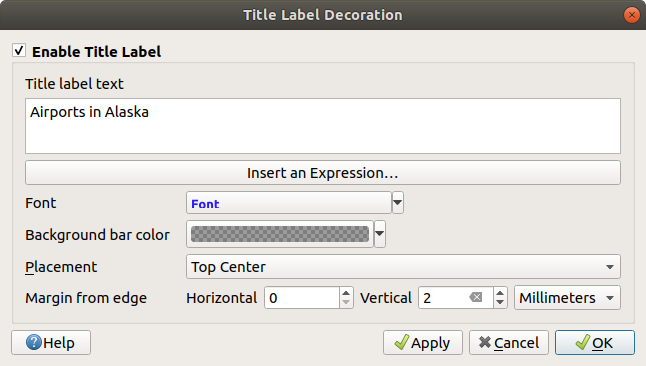
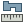
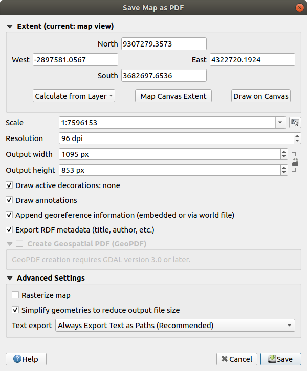

11.1. ရိုးရိုးမြေပုံမြင်ကွင်း (2D Map View)
2D map view (Map canvas ဟုလည်းခေါ်ဆိုပါသည်။) သည် မြေပုံများအား ဖော်ပြသည့် အဓိကနေရာဖြစ်ပါသည်။
QGIS သည် ပုံမှန်အားဖြင့် single map view (main map ဟုလည်းခေါ်ဆိုပါသည်) ဖြင့် ပွင့်လာမည်ဖြစ်ပါသည်။
layers များကို 2D ဖြင့် ပြသမည်ဖြစ်ပြီး Layers panel ဖြင့် သေချာချိတ်ဆက်ထားပါသည်။
အဆိုပါ window သည် သင့်အနေဖြင့် ထည့်သွင်းထားသည့် layer များတွင် သတ်မှတ်ခဲ့သည့် ပုံဖော်ပြသခြင်း (rendering) အတိုင်း
(သင်္ကေတများ၊ အညွှန်းတပ်ခြင်း (labeling) ၊ မြင်တွေ့ရမည့်အနေအထားများ) ပြသသွားမည်ဖြစ်ပါသည်။

Fig. 11.1 QGIS GUI
11.1.1. မြေပုံမြင်ကွင်းကိုလေ့လာခြင်း (Exploring the Map view)
Layer တစ်ခုအား ထည့်သွင်းသည့်အခါတွင် (ဥပမာ- Data ဖွင့်ခြင်း (Opening Data) ကို ကြည့်ရှုပါ) QGIS သည် အဆိုပါ layer ၏ ကိုဩဒိနိတ်စနစ် - CRS (Coordinate Reference System) ကို အလိုအလျောက်ရှာဖွေမည်ဖြစ်ပါသည်။ အကယ်၍ project အတွက် မတူညီသည့် CRS ကို default အဖြစ်သတ်မှတ်ဆောင်ရွက်ထားပါက (Project Coordinate Reference System များ ကို ကြည့်ပါ) layer extent (layer ၏ နယ်ပယ်အတိုင်းအတာပမာဏ) သည် အဆိုပါ CRS သို့ ပြောင်းလဲသွားမည်ဖြစ်ပါသည်။ (ဆိုလိုသည်မှာ ကိုဩဒိနိတ်စနစ်သည် တူညီမှုမရှိပါက အခြားသော dataset များ၏ ကိုဩဒိနိတ်စနစ်များနှင့် ကိုက်ညီမှုရှိအောင် ဆောင်ရွက်ခြင်းဖြစ်ပါသည်။) QGIS project အသစ်တစ်ခုအား စတင်သည့်အခါတွင်လည်း map view သည်အဆိုပါ extent အထိ zoom ချဲ့သွားမည်ဖြစ်ပါသည်။ အကယ်၍ project အတွင်းတွင် layers များရှိနေခဲ့ပါက မည်သည့် map canvas (မြေပုံရေးဆွဲသည့်နေရာ) ၏ အရွယ်အစားချိန်ညှိပြောင်းလဲခြင်းကို ဆောင်ရွက်မည်မဟုတ်ပါ။ ထို့အတွက် လက်ရှိ map canvas extent အတွင်းကျရောက်နေသည့် feature များကိုသာ တွေ့မြင်ရမည်ဖြစ်ပါသည်။
Map view အပေါ်တွင် click နှိပ်၍ map ၏ မတူညီသည့်နေရာများသို့ ရွှေ့ခြင်း (panning) သို့မဟုတ် zoom ချဲ့ခြင်းများကို ဆောင်ရွက်နိုင်မည်ဖြစ်ပါသည်။ Dedicated tools များ ( အချို့သော လုပ်ငန်းဆောင်တာများကို ဆောင်ရွက်ရန် သတ်မှတ်ထားသည့် Tool များ) ကို Navigation Toolbar နှင့် menu တို့တွင် ပံ့ပိုးပေးထားပြီး ကီးဘုတ်ရှိ shortcut များ သို့မဟုတ် မောက်စ်၏ခလုတ်များဖြင့်အသုံးပြုဆောင်ရွက်နိုင်ပါသည်။
ကိရိယာတန်ဆာပလာ (Tool) |
အသုံးပြုပုံ |
|---|---|
|
|
|
|
|
|
|
Layers panel ရှိ select ပြုလုပ်ထားသည့် layer များအားလုံး၏ select ပြုလုပ်ထားသည့် feature များဆီသို့ မြေပုံအား pan ဖြင့်ရွှေ့ပါ။ |
|
Layers panel ရှိ select ပြုလုပ်ထားသည့် layer များအားလုံး၏ selected ပြုလုပ်ထားသည့် feature များကို မြင်ကွင်းချဲ့ကြည့်ပါ။ layer contextual menu တွင်လည်းရယူဆောင်ရွက်နိုင်ပါသည်။ |
|
Layers panel ရှိ select ပြုလုပ်ထားသည့် layers များအားလုံး၏ နယ်ပယ်အတိုင်းအတာပမာဏအထိ zoom ချဲ့ကြည့်ပါ။ layer contextual menu တွင်လည်းရယူဆောင်ရွက်နိုင်ပါသည်။ |
|
Project အတွင်းရှိ layer အားလုံး၏ နယ်ပယ်အတိုင်းအတာပမာဏ သို့မဟုတ် project full extent ကို မြင်ရသည့်အထိ မြင်ကွင်းအား ချဲ့ပေးသည်။ |
|
မှတ်တမ်း (history) တွင် ယခင်ကြည့်ရှုခဲ့သည့် နယ်ပယ်အတိုင်းအတာပမာဏ (previous extent) အားပြသပေးသည်။ |
|
မှတ်တမ်း (history) ထဲရှိ မြင်ကွင်း၏ နောက်ထပ်ကြည့်ရှုမည့် နယ်ပယ်အတိုင်းအတာပမာဏ (next extent) အား ပြသပေးသည်။ |
|
မြေပုံအား active raster layer တစ်ခု၏ pixel သည် screen pixel တစ်ခုကို ဖုံးလွှမ်းသွားသည့်အထိ မြေပုံအား zoom ချဲ့ပေးသည်။ layer contextual menu တွင်လည်းရယူဆောင်ရွက်နိုင်ပါသည်။ |
မောက်စ်ဘီးလုံး |
|
ကီးဘုတ် |
|


မြေပုံ အပေါ်တွင် right click နှိပ်ပြီး မြေပုံ CRS ၊ WGS84 နှင့် custom CRS ထဲရှိ clicked point များ၏ Copy coordinates များကို  လုပ်နိုင်မည်ဖြစ်ပါသည်။
ထိုသို့ ကော်ပီကူးယူထားသည့် အချက်အလက်များကို expression၊ script၊ text editor သို့မဟုတ် spreadsheet…ကဲ့သို့သော နေရာများတွင် paste ပြုလုပ်နိုင်ပါသည်။
လုပ်နိုင်မည်ဖြစ်ပါသည်။
ထိုသို့ ကော်ပီကူးယူထားသည့် အချက်အလက်များကို expression၊ script၊ text editor သို့မဟုတ် spreadsheet…ကဲ့သို့သော နေရာများတွင် paste ပြုလုပ်နိုင်ပါသည်။
11.1.2. မြေပုံ ပုံဖော်ခြင်းကို ထိန်းချုပ်ကိုင်တွယ်ခြင်း (Controlling map rendering)
ပုံမှန်အားဖြင့် QGIS သည် map canvas အား refresh ပြုလုပ်သည့်အခါတိုင်းတွင် မြင်ရသည့် layer (visible layer) အားလုံးကို ပုံဖော်ပြသသွားမည်ဖြစ်ပါသည်။ Map canvas အား refresh ပြုလုပ်သည့် ဖြစ်စဉ်တွင် အောက်ပါတို့ပါဝင်ပါသည်-
Layer တစ်ခု၏ visibility (မြင်ရနိုင်စွမ်း) အားပြောင်းလဲခြင်း
Visible layer တစ်ခု၏ symbology အား ပြင်ဆင်ပြောင်းလဲခြင်း
Layer တစ်ခုအား ထပ်ထည့်ခြင်း
Panning သို့မဟုတ် zooming ပြုလုပ်ခြင်း
QGIS window အား အရွယ်အစားပြန်လည်ချိန်ညှိခြင်း
QGIS သည် ပုံဖော်ပြသခြင်းလုပ်ငန်းစဉ်ကို များစွာသောနည်းလမ်းများဖြင့် ကိုင်တွယ်ဆောင်ရွက်ရန် ခွင့်ပြုပါသည်။
global level တွင်ဖြစ်စေ
Layer တစ်ခုချင်းစီအလိုက် ဥပမာ- စကေးပေါ်မူတည်သော ပုံဖော်ပြသခြင်း အား အသုံးပြုခြင်း
သို့မဟုတ် GUI တွင် ပါရှိသည့် tool များကို အသုံးပြုခြင်း
Map ရေးဆွဲခြင်းအား ရပ်တံ့ရန် Esc key ကိုနှိပ်ပါ။ ၎င်းသည် map canvas အား refresh ပြုလုပ်ခြင်းကို ရပ်တံ့စေမည်ဖြစ်ပြီး မြေပုံ ရေးဆွဲမှုအား တစ်ဝက်တစ်ပျက်ဖြင့်ရပ်ထားမည်ဖြစ်ပါသည်။ Map ရေးဆွဲခြင်းအား ရပ်တံ့ရန် Esc ကိုဖိပြီးနောက်တွင် အချိန်အနည်းငယ်ကြာမြင့်မည်ဖြစ်ပါသည်။
ပုံဖော်ပြသခြင်းအားဆိုင်းငံ့ရန် status bar ၏ ညာဘက်အောက်ထောင့်တွင် ရှိသည့်  Render checkbox ကိုကလစ်နှိပ်ပါ။
Render ကို အမှန်မခြစ်ထားပါက QGIS သည် အထက်တွင်ဖော်ပြခဲ့သည့် မည်သည့်လုပ်ဆောင်မှုများကို တုံပြန်သည့်အနေဖြင့် canvas များ ကိုပြန်လည်ရေးဆွဲမည်မဟုတ်ပါ။ ပုံဖော်ပြသခြင်း အား ရပ်တံ့လိုသည့် နမူနာသာဓကများမှာ-
Render checkbox ကိုကလစ်နှိပ်ပါ။
Render ကို အမှန်မခြစ်ထားပါက QGIS သည် အထက်တွင်ဖော်ပြခဲ့သည့် မည်သည့်လုပ်ဆောင်မှုများကို တုံပြန်သည့်အနေဖြင့် canvas များ ကိုပြန်လည်ရေးဆွဲမည်မဟုတ်ပါ။ ပုံဖော်ပြသခြင်း အား ရပ်တံ့လိုသည့် နမူနာသာဓကများမှာ-
Layer များအား ထည့်သွင်းပြီး ၎င်းတို့ကို ပုံဆွဲသားခြင်းမပြုမီ အမှတ်အသားပြုလုပ်ခြင်း (symbolizing)
ကြီးမားသည့် layer များအား တစ်ခုထက်ပို၍ ထည့်သွင်းပြီး ပုံဆွဲသားခြင်းမပြုမီ scale dependency (စကေးပေါ်မူတည်မှု) ကို သတ်မှတ်ခြင်း
ကြီးမားသည့် layer များအား တစ်ခုထက်ပို၍ ထည့်သွင်းပြီး ပုံဆွဲသားခြင်းမပြုမီ သတ်မှတ်မြင်ကွင်း (specific view )တစ်ခုကို zoom ချဲ့ကြည့်ခြင်း
အထက်တွင်ပြောခဲ့သည့် လုပ်ငန်းများအား ပေါင်းစပ်ဆောင်ရွက်ခြင်း
Render checkbox အား အမှန်ခြစ်ထားခြင်းသည် ပုံဖော်ပြသခြင်းကို ဆောင်ရွက်စေမည်ဖြစ်ပြီး map canvas အား ချက်ချင်း refresh ပြုလုပ်ပေးမည်ဖြစ်ပါသည်။
11.1.3. Map canvas ပေါ်ရှိ အချိန်အချက်အလက်အထိန်းအချုပ် (Time-based control on the map canvas)
QGIS သည် ထည့်သွင်းထားသည့် layer များကို ယာယီထိန်းချုပ်မှုများပြုလုပ်နိုင်ပါသည်။ ဆိုလိုသည်မှာ အချိန်ပြောင်းလဲမှုအပေါ်မူတည်၍ map canvas ကို ပြင်ဆင်ပြောင်းလဲမှုများလုပ်နိုင်ပါသည်။ ထိုသို့လုပ်ဆောင်ရန် လိုအပ်သည်များမှာ-
ပြောင်းလဲနိုင်သော အချိန်ဆိုင်ရာဂုဏ်သတ္တိများပါရှိသည့် Layer များကိုသတ်မှတ်ပါသည်။ QGIS သည် အမျိုးမျိုးသော data provider များကို ယာယီထိန်းချုပ်မှုများပြုလုပ်ရန် စိတ်ကြိုက်ပြင်ဆင်နိုင်သည့် (custom settings) များဖြင့် ပံ့ပိုးပါသည်။ အဓိကအားဖြင့် layer များပြသမည့် အချိန်ပမာဏများ ကို သတ်မှတ်ခြင်းဖြစ်ပါသည်။
raster layers - Layer ကို ပြသရန်/မပြသရန် ထိန်းချုပ်ခြင်းကိုလုပ်ဆောင်ပါသည်။
WMTS layers - တသမတ်တည်းရှိနေသည့်အချိန်ပမာဏ (static time range) သို့မဟုတ် ယာယီပြောင်းလဲမှုများ (dynamic temporal range) အပေါ်မူတည်၍ data ကို render ပြုလုပ်သင့်/မသင့်ကို ထိန်းချုပ်ပါသည်။
vector layers - အချိန်တန်ဖိုးများအား ၎င်းတို့၏ ဆက်စပ် attributes နှင့်ဆက်စပ်၍ features များကို စစ်ထုတ်ပါသည်။
mesh layers - Active ဖြစ်နေသည့် dataset groups values များကို Dynamically (ပြောင်းလဲ) ဖော်ပြပါသည်။
Layer တစ်ခုအတွက် dynamic temporal options ကို ဖွင့်ထားပါက layer သည် ယာယီထိန်းချုပ်ခံထားရသည်ကို သတိပြုမိစေရန် Layers panel ထဲရှိ layer ၏ ဘေးတွင်
 icon ကို ပြသနေမည်ဖြစ်ပါသည်။ အဆိုပါ icon အား နှိပ်၍ temporal setting အား အသစ်ပြန်လည်ပြင်ဆင်ပြောင်းလဲနိုင်ပါသည်။
icon ကို ပြသနေမည်ဖြစ်ပါသည်။ အဆိုပါ icon အား နှိပ်၍ temporal setting အား အသစ်ပြန်လည်ပြင်ဆင်ပြောင်းလဲနိုင်ပါသည်။Map canvas ၏ temporal navigation (အချိန်ဆိုင်ရာညွှန်ပြခြင်း) ကို Temporal controller panel အား အသုံးပြု၍ ဖွင့်ပါ။ Panel သည် အောက်ပါတို့မှတဆင့် အသက်ဝင်လာမည်ဖြစ်ပါသည်။
Map Navigation toolbar ရှိ
 Temporal controller panel icon ကို အသုံးပြုခြင်း သို့မဟုတ်
Temporal controller panel icon ကို အသုံးပြုခြင်း သို့မဟုတ်menu မှတဆင့်
11.1.3.1. အချိန်အချက်အလက်ကိုင်တွယ်ရန်နေရာ (The temporal controller panel)
Temporal controller တွင် အောက်ဖော်ပြပါ mode များပါဝင်ပါသည်-

Fig. 11.2 Navigation mode အတွင်းရှိ Temporal Controller Panel
 Turn off temporal navigation - Temporal setting များအားလုံးကို ပိတ်ထားမည်ဖြစ်ပြီး မြင်နိုင်သည့် layer (visible layers) များကို ပုံမှန်အတိုင်း ပုံဖော်ပြသမည်ဖြစ်ပါသည်။
Turn off temporal navigation - Temporal setting များအားလုံးကို ပိတ်ထားမည်ဖြစ်ပြီး မြင်နိုင်သည့် layer (visible layers) များကို ပုံမှန်အတိုင်း ပုံဖော်ပြသမည်ဖြစ်ပါသည်။ Fixed range temporal navigation - အချိန်တစ်ခု (time range) သတ်မှတ်ထားပြီး ၎င်း၏ အချိန်အပိုင်းအခြားအကွာအဝေးပမာဏ (temporal range) သည်
အဆိုပါ time range နှင့် ထပ်တူကျနေသည့် layers များ (သို့မဟုတ် features) များကိုသာ မြေပုံပေါ်တွင် ပြသသွားမည်ဖြစ်သည်။
Fixed range temporal navigation - အချိန်တစ်ခု (time range) သတ်မှတ်ထားပြီး ၎င်း၏ အချိန်အပိုင်းအခြားအကွာအဝေးပမာဏ (temporal range) သည်
အဆိုပါ time range နှင့် ထပ်တူကျနေသည့် layers များ (သို့မဟုတ် features) များကိုသာ မြေပုံပေါ်တွင် ပြသသွားမည်ဖြစ်သည်။ Animated temporal navigation - အချိန်တစ်ခု (time range) သတ်မှတ်ထားပြီး အဆင့်များခွဲထုတ်လိုက်မည်ဖြစ်သည်။ Temporal range နှင့် အဆိုပါ frame တစ်ခုစီ ထပ်တူကျနေသည့်
layers များ (သို့မဟုတ် features) များကိုသာ မြေပုံပေါ်တွင် ပြသသွားမည်ဖြစ်သည်။
Animated temporal navigation - အချိန်တစ်ခု (time range) သတ်မှတ်ထားပြီး အဆင့်များခွဲထုတ်လိုက်မည်ဖြစ်သည်။ Temporal range နှင့် အဆိုပါ frame တစ်ခုစီ ထပ်တူကျနေသည့်
layers များ (သို့မဟုတ် features) များကိုသာ မြေပုံပေါ်တွင် ပြသသွားမည်ဖြစ်သည်။Animation (လှုပ်ရှားပုံရိပ်) ကို ယေဘုယျအားဖြင့် ထိန်းချုပ်ရန်အတွက်
 Settings -
Settings -Frames rate - စက္ကန့်အလိုက်ဆောင်ရွက်သည့်လုပ်ငန်းစဉ်အဆင့်အရေအတွက်ကို ဖော်ပြပါသည်။
 Cumulative range - Animation အားလုံးသည် တူညီသည့် စရက်-အချိန် (start date-time)များရှိသော်လည်း ပြီးဆုံးသည့် အချိန်နှင့်ရက်စွဲ (end dates and times) များသည် ကွာခြားမည်ဖြစ်ပါသည်။ ၎င်းသည် ဒေတာများမှတစ်ဆင့် ‘moving time window’ ကို ပြသခြင်းအစား ဒေတာများကို temporal
visualization တွင်စုစည်းသိမ်းဆည်းလိုပါက လွန်စွာအသုံးဝင်ပါသည်။
Cumulative range - Animation အားလုံးသည် တူညီသည့် စရက်-အချိန် (start date-time)များရှိသော်လည်း ပြီးဆုံးသည့် အချိန်နှင့်ရက်စွဲ (end dates and times) များသည် ကွာခြားမည်ဖြစ်ပါသည်။ ၎င်းသည် ဒေတာများမှတစ်ဆင့် ‘moving time window’ ကို ပြသခြင်းအစား ဒေတာများကို temporal
visualization တွင်စုစည်းသိမ်းဆည်းလိုပါက လွန်စွာအသုံးဝင်ပါသည်။
11.1.3.2. အချိန်ဖြင့်အသက်ဝင်လှုပ်ရှားစေခြင်း (Animating a temporal navigation)
Animation သည် တစ်ခုသည့် သတ်မှတ်ထားသည့် အချိန်ပမာဏတစ်ခုအတွင်း အချိန်အလိုက် visible layers များပြောင်းလဲခြင်းအပေါ်မူတည်ပါသည်။ Temporal animation တစ်ခုအားဖန်တီးရန်-
- Animated temporal navigation အားဖွင့်ခြင်း - animation player widget ကိုပြသခြင်း
Time range ကို ထည့်သွင်းပါ။
 ခလုတ်ကို အသုံးပြုခြင်းဖြင့် အောက်ပါတို့ကို သတ်မှတ်နိုင်ပါသည်-
ခလုတ်ကို အသုံးပြုခြင်းဖြင့် အောက်ပါတို့ကို သတ်မှတ်နိုင်ပါသည်-အချိန်ပါဝင်သော layer များအားလုံး၏ Set to full range (အပိုင်းအခြားအပြည့်အစုံကိုသတ်မှတ်ခြင်း)
Project properties တွင် သတ်မှတ်ထားသည့်အတိုင်း Set to preset project range (project အပိုင်းအခြားကို အကြိုသတ်မှတ်ခြင်း)
အချိန်ပါဝင်သော layer တစ်ခုမှ ယူထားသော Set to single layer’s range (layer တစ်ခုတည်း၏ အပိုင်းအခြားကိုသတ်မှတ်ခြင်း)
အချိန်အပိုင်းအခြား (time range) ကို ခွဲထုတ်သတ်မှတ်ရန် Step တွင် အချိန်ကို ဖြည့်ပါ။
secondsမှအစcenturiesအထိ အမျိုးမျိုးသောယူနစ်များကို အသုံးပြုနိုင်အောင် ပံ့ပိုးပေးထားပါသည်။source timestampsoption ကိုလည်း အဆင့်တစ်ဆင့်အဖြစ်ရယူဆောင်ရွက်နိုင်ပါသည်- select ပြုလုပ်သည့်အခါတွင် temporal navigation (အချိန်အပိုင်းအခြားအလိုက်ညွှန်ပြမှု) ကို project အတွင်းရှိ layer များမှ ရရှိနိုင်သည့် အချိန်အပိုင်းအခြားပမာဏများအတွင်းသို့ ရောက်ရှိစေပါသည်။ ၎င်းသည် ရရှိသည့်အချိန်များတစ်ခုနှင့်တစ်ခုအဆက်အစပ်မရှိသော layer များ project တွင်ပါဝင်သည့်အခါတွင် များစွာအသုံးဝင်ပါသည်။ ဥပမာ - WMS-T service သည် ရက်စွဲပုံမှန်မရှိသည့် images များပံ့ပိုးထားသည့်အခါ ဤ option သည် နောက်ထပ်ဖြစ်ပေါ်ရရှိမည့် image များပြသနိုင်သည့် time range အကြားကိုသာ ရောက်ရှိစေပါသည်။ ။Animation ကို preview ကြည့်ရှုရန်
 ခလုတ်ကိုနှိပ်ပါ။
QGIS သည် သတ်မှတ်ထားသည့်အချိန်များ (set times) ၌ layer ပုံဖော်ပြသခြင်းကို အသုံးပြု၍ scene များကိုထုတ်လုပ်ပေးပါသည်။
Layer များပြသမှုသည် ၎င်းတို့အနေဖြင့် time frame တစ်ခုချင်းစီနှင့် ထပ်တူကျမှုရှိမရှိအပေါ်မူတည်ပါသည်။
ခလုတ်ကိုနှိပ်ပါ။
QGIS သည် သတ်မှတ်ထားသည့်အချိန်များ (set times) ၌ layer ပုံဖော်ပြသခြင်းကို အသုံးပြု၍ scene များကိုထုတ်လုပ်ပေးပါသည်။
Layer များပြသမှုသည် ၎င်းတို့အနေဖြင့် time frame တစ်ခုချင်းစီနှင့် ထပ်တူကျမှုရှိမရှိအပေါ်မူတည်ပါသည်။
Fig. 11.3 Layer တစ်ခုအား Temporal navigation ပြုလုပ်ခြင်း
Animation ကို time slider အားရွှေ့ခြင်းဖြင့် preview ကြိုတင်ကြည့်ရှုနိုင်ပါသည်။
Loop checkbox အား အမှန်ခြစ်ပေးထားခြင်းသည် animation အား ထပ်ဖန်တလဲလဲ ပြသနေမည်ဖြစ်ပြီး ကို နှိပ်ခြင်းသည် ပြသနေသည့် animation ကို ရပ်တန့်သွားစေမည်ဖြစ်သည်။
Video player နှင့်ပတ်သက်သည့် ခလုတ်များ ပါဝင်ပါသည်။Map canvas ပေါ်တွင် cursor နှင့်အတူ မောက်စ်၏ဘီးလုံးအား အလျားလိုက် scrolling (horizontal scrolling) ပြုလုပ်ခြင်း (ပံ့ပိုးထားပါက) သည် temporal navigation slider ကို ရှေ့ နှင့် နောက်ရွှေ့ခြင်း ကို navigate သို့မဟုတ် “scrub” လုပ်ရန်ခွင့်ပြုပါသည်။
အကယ်၍ scene များကို ကိုယ်စားပြုဖော်ပြသည့် image များကို စီးရီးအလိုက် export လုပ်လိုပါက
 Export animation ခလုတ်ကိုနှိပ်ပါ။
၎င်းတို့အား နောက်ပိုင်းတွင် video editor software တွင် ပေါင်းစပ်နိုင်ပါသည်_
Export animation ခလုတ်ကိုနှိပ်ပါ။
၎င်းတို့အား နောက်ပိုင်းတွင် video editor software တွင် ပေါင်းစပ်နိုင်ပါသည်_
Fig. 11.4 Map canvas animation scenes များကို image များအဖြစ်သို့ exporting ပြုလုပ်ခြင်း
ဖိုင်နာမည် Template -
####များကို frame sequence number ဖြင့်အစားထိုးသည်။Output directory - ဖိုင်သိမ်းဆည်းမည့် လမ်းကြောင်း
Map settings အောက်တွင်-
အသုံးပြုရန် spatial extent ကို ပြန်လည်သတ်မှတ်နိုင်ပါသည်။
Image ၏ Resolution ကို ထိန်းချုပ်နိုင်ပါသည်။ (Output width နှင့် Output height)
Draw active decorations - active decorations များကို output ထဲတွင် သိမ်းထား/မထား ရွေးချယ်နိုင်သည်။
Temporal settings တွင် အောက်ပါတို့ကို ပြင်ဆင်နိုင်ပါသည်။
Animation အတွက် အချိန် Range
Step (frame length) ရွေးချယ်ထားသည့် ယူနစ်အတိုင်း (ရက်၊ လ၊ နှစ်၊….)
11.1.4. Bookmarking extents on the map (Map ပေါ်တွင် နယ်ပယ်အတိုင်းအတာပမာဏများကို bookmark ပြုလုပ်ခြင်း)
Spatial Bookmarks သည် ပထဝီဝင်ဆိုင်ရာတည်နေရာတစ်ခုအား “bookmark” ပြုလုပ်ခွင့်ပေးပြီး နောင်တွင် အဆိုပါနေရာသို့ ပြန်လည်ရောက်ရှိစေမည်ဖြစ်သည်။ ပုံမှန်အားဖြင့် bookmarks များကို user’s profile (User Bookmarks အဖြစ်) ထဲတွင်သိမ်းဆည်းထားလေ့ရှိသည်။ ဆိုလိုသည်မှာ သုံးစွဲသူအနေဖြင့် ဖွင့်မည့် မည်သည့် project တွင်မဆို ၎င်းတို့အား ရယူသုံးစွဲနိုင်သည်ကိုဆိုလိုပါသည်။ ၎င်းတို့အား single project (Project Bookmarks ဟုခေါ်သည့်) အတွက်လည်း သိမ်းဆည်နိုင်ပြီး ထိုသို့သိမ်းဆည်းခြင်းသည် project အား အခြားသုံးစွဲသူများနှင့် မျှဝေမှုများပြုလုပ်သည့်အခါတွင် များစွာအသုံးဝင်ပါသည်။
11.1.4.1. Bookmark တစ်ခုအားဖန်တီးခြင်း (Creating a Bookmark)
Bookmark တစ်ခုအား ဖန်တီးရန်-
ကိုင်တွယ်ဆောင်ရွက်မည့် ဧရိယာသို့ မြင်ကွင်းချဲ့/ချုံ့ခြင်း (zoom) နှင့် ရွှေ့ခြင်း (pan) ပြုလုပ်ပါ။
menu option
 ကို select ပြုလုပ်ပါ၊
Ctrl+B နှိပ်ပါ သို့မဟုတ် Browser panel ရှိ
ကို select ပြုလုပ်ပါ၊
Ctrl+B နှိပ်ပါ သို့မဟုတ် Browser panel ရှိ  Spatial Bookmarks entry ကို right-click နှိပ်ပြီး New Spatial Bookmark ကို ရွေးချယ်ပါ။
Bookmark Editor dialog သည် ပွင့်လာမည်ဖြစ်ပါသည်။
Spatial Bookmarks entry ကို right-click နှိပ်ပြီး New Spatial Bookmark ကို ရွေးချယ်ပါ။
Bookmark Editor dialog သည် ပွင့်လာမည်ဖြစ်ပါသည်။
Fig. 11.5 Bookmark Editor Dialog
Bookmark အား ဖော်ပြမည့် အမည်ကိုထည့်သွင်းပါ။
သက်ဆိုင်ရာ bookmarks များကို သိမ်းဆည်းထားရန် group name တစ်ခုကို select သို့မဟုတ် ထည့်သွင်းပါ။
extent selector widget ကို အသုံးပြု၍ သိမ်းဆည်းလိုသည့် ဧရိယာ၏ extent ကို select ပြုလုပ်ပါ။
Map ၏ Rotation အား ပြောင်းလဲပါ။
အဆိုပါ extent အတွက် အသုံးပြုရန် CRS ကို သတ်မှတ်ဖော်ပြပါ။
Bookmark အား Saved in User Bookmarks သို့မဟုတ် Project Bookmarks (ပုံမှန်အားဖြင့် ဤ drop-down list သည် User Bookmarks တွင်သတ်မှတ်ထားပါသည်) မည်သည့်နေရာတွင် သိမ်းဆည်းမည်ကို ရွေးချယ်ပါ။
Bookmark အား list ထဲတွင် ထည့်သွင်းရန် Save ကို နှိပ်ပါ။
များစွာသော bookmark များသည် တူညီသည့်နာမည်ဖြင့်ရှိနိုင်သည်ကို သတိပြုရမည်ဖြစ်ပါသည်။
11.1.4.2. Bookmarks များနှင့်အလုပ်လုပ်ခြင်း (Working with Bookmarks)
Bookmark များအား အသုံးပြုရန်နှင့် စီမံခန့်ခွဲရန် Spatial Bookmarks panel သို့မဟုတ် Browser ကို အသုံးပြုနိုင်သည်။
Spatial Bookmarks Manager panel ကိုဖွင့်ရန် သို့မဟုတ် Ctrl+7 ကိုနှိပ်ပါ။
Browser panel ထဲတွင် Spatial Bookmarks ကို ဖော်ပြရန်
သို့မဟုတ် Ctrl+Shift+B ကို နှိပ်ပါ။
အောက်ဖော်ပြပါလုပ်ငန်းများကိုလည်း ဆောင်ရွက်နိုင်ပါသည်-
လုပ်ငန်းများ |
Spatial Bookmark Manager |
Browser |
|---|---|---|
Zoom to a Bookmark (Bookmark တစ်ခုကို zoom ချဲ့ခြင်း) |
၎င်းအပေါ်တွင် Double-click နှိပ်ပါ သို့မဟုတ် bookmark ကို select ပြုလုပ်၍ Zoom to bookmark ခလုတ်ကိုနှိပ်ပါ။ |
၎င်းအပေါ်တွင် Double-click နှိပ်ပါ။ ၎င်းအား ဖိဆွဲ၍ map canvas ပေါ်သို့ တင်ပါ သို့မဟုတ် bookmark ကို right-click လုပ်၍ Zoom to Bookmark ကို select ပြုလုပ်ပါ။ |
Delete a bookmark (Bookmark တစ်ခုကို delete လုပ်ခြင်း) |
Bookmark ကို select ပြုလုပ်၍ |
Bookmark ကို right-click နှိပ်ပြီး Delete Spatial Bookmark ကို select ပြုလုပ်ပါ။ ရွေးချယ်ထားမှုကို အတည်ပြုပါ။ |
Export bookmarks to XML (Bookmarks များကို XML သို့ export လုပ်ခြင်း) |
|
တစ်ခု သို့မဟုတ် တစ်ခုထက်ပိုသော folders (user or project) များ သို့မဟုတ် subfolders (groups) များကို select ပြုလုပ်ပါ။
ထို့နောက် right-click နှိပ်၍ |
Import bookmarks from XML (Bookmarks များကို XML မှ import လုပ်ခြင်း) |
|
Bookmark များကို မည်သည့်နေရာသို့ import ပြုလုပ်မည်ကို ဆုံးဖြတ်ရန်အတွက် Spatial Bookmarks entry သို့မဟုတ် ၎င်း၏ folder များ (user သို့မဟုတ်
project) ထဲမှ သို့မဟုတ် subfolder (groups) များထဲမှ တစ်ခုကို right-click နှိပ်ပါ။ ထို့နောက် |
Edit bookmark (Bookmark တစ်ခုအား ပြင်ဆင်တည်းဖြတ်ခြင်း) |
ဇယား (table) အတွင်းရှိ တန်ဖိုးများကို ပြောင်းလဲပြင်ဆင်ခြင်းဖြင့် bookmark တစ်ခုကို ပြောင်းလဲပြင်ဆင်နိုင်ပါသည်။ အမည်၊ group၊ extent များနှင့် ၎င်းအား project ထဲတွင် သိမ်းဆည်းမည်/မသိမ်းဆည်းမည်ကို ပြင်ဆင်တည်းဖြတ်နိုင်ပါသည်။ |
အလိုရှိသည့် bookmark အား right-click နှိပ်ပြီး Edit Spatial Bookmark… ကို ရွေးချယ်ပါ။ Bookmark Editor သည် ပွင့်လာမည်ဖြစ်ပြီး ၎င်းအား ပထမဆုံးအကြိမ်ဖန်တီးခြင်းဖြစ်ပါက bookmark ၏ မည်သည့်ရှုထောင့်မျိုးကိုဆိုမဆို ပြင်ဆင်ပြောင်းလဲခွင့်ပေးမည်ဖြစ်ပါသည်။ Folder (user နှင့် project) နှင့် subfolder (groups) များအကြား bookmark ကို ဖိဆွဲ၍ရွှေ့နိုင်ပါသည်။ |


{kind=link}
Spatial Bookmarks Manager ရှိ အလိုရှိသည့် bookmark အား right-click နှိပ်၍ bookmark action များစီမံခန့်ခွဲနိုင်ပါသည်။ locator တွင် bookmark အမည်အားထည့်သွင်း၍ bookmark များကို zoom ချဲ့ကြည့်ရှုနိုင်ပါသည်။
11.1.5. Decorating the map (မြေပုံအား တန်ဆာဆင်ခြင်း)
မြေပုံကို တန်ဆာဆင်ခြင်းတွင် Grid ၊ ခေါင်းစဉ်အညွှန်း ၊ မူပိုင်ခွင့်အညွှန်း ၊ ဓာတ်ပုံ ၊ မြောက်အရပ်ပြမြှား ၊ စကေးဘား နှင့် Layout Extent များပါဝင်ပါသည်။ ၎င်းတို့အား cartographic elements (မြေပုံဖန်တီးရာတွင် အသုံးပြုသည့် element များ) များထည့်သွင်းခြင်းဖြင့် အလှဆင်နိုင်ရန် အသုံးပြုပါသည်။
11.1.5.1. ဂရစ်လိုင်း (Grid)
 Grid သည် map canvas ပေါ်တွင် coordinate grid နှင့် coordinate annotations များ ထည့်သွင်းခြင်းကို ခွင့်ပြုပါသည်။
Grid သည် map canvas ပေါ်တွင် coordinate grid နှင့် coordinate annotations များ ထည့်သွင်းခြင်းကို ခွင့်ပြုပါသည်။
Dialog ကို ဖွင့်ရန် menu option ကို select ပြုလုပ်ပါ။

Fig. 11.6 Grid Dialog
- Enable grid ကို အမှန်ခြစ်၍ map canvas ပေါ်တွင် ထည့်သွင်းထားသည့် layer များအတိုင်း grid အဓိပ္ပါယ်သတ်မှတ်ချက်များကိုသတ်မှတ်ပါ။
Grid type - ၎င်းသည် Line သို့မဟုတ် Marker ဖြစ်နိုင်ပါသည်။
Grid အမှတ်အသားများကို ဖော်ပြရန် သက်ဆိုင်ရာ Line symbol သို့မဟုတ် marker symbol ကို အသုံးပြုပါသည်။
Grid အမှတ်အသားများအကြားရှိ Interval X နှင့် Interval Y- မြေပုံယူနစ်များဖြင့်
Map canvas ၏ ဘက်ဘက်အောက်ထောင့်မှနေ၍ grid အမှတ်အသားများ၏ Offset X နှင့် Offset Y အကွာအဝေး - မြေပုံယူနစ်များဖြင့်
ကြားအကွာအဝေး (interval) နှင့် offset parameter များအား အောက်ပါတို့ကို အခြေခံ၍ သတ်မှတ်ပါသည်-
Canvas Extents: canvas အကျယ်၏ ၅ပုံ၁ပုံ နီးပါး interval အကွာအဝေးရှိသည့် grid တစ်ခုအားထုတ်လုပ်ပေးသည်။
Active Raster Layer resolution (ကြည်လင်ပြတ်သားမှု)
Grid marks များ၏ ကိုဩဒိနိတ်များကို ပြသရန်
Draw annotations ကို အမှန်ခြစ်ပြီး အောက်ပါတို့ကို သတ်မှတ်ဆောင်ရွက်ပါ-Annotation direction သည် labels များအား ၎င်းတို့၏ grid line များနှင့် ဆက်စပ်၍ မည်ကဲ့သို့နေရာချထားမည်ကို ဆိုလိုခြင်းဖြစ်ပါသည်။ ၎င်းတို့သည်- * Label အားလုံးအတွက် Horizontal သို့မဟုတ် Vertical * Horizontal and Vertical ဆိုလိုသည်မှာ label တစ်ခုချင်းစီသည် ၎င်းတို့ညွှန်းဆိုသည့် grid mark နှင့် အပြိုင်ရှိနေပါသည်။ * Boundary direction ဆိုလိုသည်မှာ label တစ်ခုချင်းစီသည် canvas boundary အတိုင်းရှိမည်ဖြစ်ပြီး ၎င်းတို့ညွှန်းဆိုသည့် grid mark နှင့် ထောင့်မှန်ကျဖြစ်နေပါသည်။
Annotation font (text formatting ၊ buffer ၊ shadow…) font selector widget ကို အသုံးပြုခြင်း
Distance to map frame သည် annotations နှင့် map canvas အကန့်အသတ်များ အကြားရှိ margin ၊ exporting the map canvas (map canvas export ထုတ်ခြင်း) ဆောင်ရွက်ရာတွင် ဥပမာ- image format သို့မဟုတ် PDF အဖြစ်သို့ လွယ်ကူအဆင်ပြေစေပြီး annotation များသည် “paper” အကန့်အသတ်များတွင် ရှိနေခြင်းကိုရှောင်ရှားစေနိုင်ပါသည်။
Coordinate precision
လိုအပ်သလိုစိတ်ကြိုက်ပြင်ဆင်ပြီးပါက မျှော်မှန်းထားသည့်အတိုင်းဖြစ်စေရန် Apply သို့မဟုတ် OK ကို နှိပ်ပါ။
11.1.5.2. ခေါင်းစဉ်စာသား (Title Label)
 Title Label သည် မြေပုံအား (ခေါင်းစဉ်) Title တပ်ခြင်းကို ဆောင်ရွက်ပေးပါသည်။
Title Label သည် မြေပုံအား (ခေါင်းစဉ်) Title တပ်ခြင်းကို ဆောင်ရွက်ပေးပါသည်။
ခေါင်းစဉ်တပ်ရန်-
Dialog ကို ဖွင့်ရန် menu option ကို select လုပ်ပါ။
 Fig. 11.7 ခေါင်းစဉ် တန်ဆာဆင်ခြင်း Dialog
- Enable Title Label အား အမှန်ခြစ်ထားရမည်ဖြစ်ပါသည်။
မြေပုံ အပေါ်တွင် တပ်လိုသည့် ခေါင်းစဉ်စာသားအား ထည့်သွင်းရေးသားပါ။ Insert or Edit an Expression… ခလုတ်ကို အသုံးပြု၍ ၎င်းကို dynamic ဖြစ်အောင်ပြုလုပ်နိုင်ပါသည်။
QGIS ၏ text formatting option များကို အပြည့်အဝအသုံးချနိုင်သည့် font selector widget ကို အသုံးပြု၍ label အတွက် ဖောင့် Font ကို ရွေးချယ်ပါ။ font combo box ၏ ညာဘက်ရှိ အမဲရောင်မြှားကို နှိပ်ပြီး ဖောင့်အရောင်နှင့် အလင်းပိတ်မှု (opacity) ကို လွယ်ကူလျင်မြန်စွာသတ်မှတ်နိုင်ပါသည်။
ခေါင်းစဉ်၏ Background bar color သတ်မှတ်ရန်အတွက် color ကို select လုပ်ပါ။
Canvas အပေါ်တွင် label အား နေရာချထားရန် Placement ကို ရွေးချယ်ပါ။ ရွေးချယ်စရာများမှာ ဘယ်ဘက်ထိပ်၊ အလယ်ထိပ် (default)၊ ညာဘက်ထိပ်၊ ဘယ်ဘက်အောက်ခြေ၊ အလယ်အောက်ခြေ နှင့် ညာဘက်အောက်ခြေ တို့ဖြစ်ပါသည်။
ရေပြင်ညီ နှင့်/သို့မဟုတ် ဒေါင်လိုက် Margin from Edge ကို သတ်မှတ်ခြင်းဖြင့် item တစ်ခုချင်းစီ၏ နေရာချထားမှုကို ပြန်လည်ပြင်ဆင်နိုင်ပါသည်။ အဆိုပါတန်ဖိုးများသည် Millimeters သို့မဟုတ် Pixels ဖြစ်နိုင်ပြီး map canvas ၏ အမြင့် သို့မဟုတ် အကျယ်တို့၏ ရာခိုင်နှုန်း Percentage ဖြင့်လည်း သတ်မှတ်နိုင်ပါသည်။
လိုအပ်သလိုစိတ်ကြိုက်ပြင်ဆင်ပြီးပါက မျှော်မှန်းထားသည့်အတိုင်းဖြစ်စေရန် Apply သို့မဟုတ် OK ကို နှိပ်ပါ။
11.1.5.3. Copyright Label (မူပိုင်ခွင့်အမှတ်တံဆိပ်)
 Copyright Label ကို မိမိ၏ map အား Copyright label (မူပိုင်ခွင့်အမှတ်တံဆိပ်) တပ်ရန်အတွက်အသုံးပြုနိုင်ပါသည်။
Copyright Label ကို မိမိ၏ map အား Copyright label (မူပိုင်ခွင့်အမှတ်တံဆိပ်) တပ်ရန်အတွက်အသုံးပြုနိုင်ပါသည်။
Copyright label ထည့်သွင်းရန်-
Dialog ကိုဖွင့်ရန် menu option ကို select လုပ်ပါ။

Fig. 11.8 Copyright တန်ဆာဆင်ခြင်း Dialog
- Enable Copyright Label ကို အမှန်ခြစ်ထားရမည်ဖြစ်ပါသည်။
ထည့်သွင်းလိုသည့် copyright text ကို map ပေါ်တွင် ရေးသားထည့်သွင်းပါ။ Insert or Edit an Expression… ခလုတ်ကို အသုံးပြု၍ ၎င်းကို dynamic ဖြစ်အောင် ပြုလုပ်နိုင်ပါသည်။
QGIS ၏ text formatting option များကို အပြည့်အဝအသုံးချနိုင်သည့် font selector widget ကို အသုံးပြု၍ label အတွက် ဖောင့် Font ကို ရွေးချယ်ပါ။ font combo box ၏ ညာဘက်ရှိ အမဲရောင်မြှားကို နှိပ်ပြီး ဖောင့်အရောင်နှင့် အလင်းပိတ်မှု (opacity) ကို လွယ်ကူလျင်မြန်စွာသတ်မှတ်နိုင်ပါသည်။
Canvas တွင် label အား နေရာချထားရန် Placement ကို ရွေးချယ်ပါ။ ရွေးချယ်စရာများမှာ ဘယ်ဘက်ထိပ်၊ အလယ်ထိပ်၊ ညာဘက်ထိပ် ၊ ဘယ်ဘက်အောက်ခြေ ၊ အလယ်အောက်ခြေ နှင့် ညာဘက်အောက်ခြေ (default) တို့ဖြစ်ပါသည်။
- ရေပြင်ညီ နှင့်/သို့မဟုတ် ဒေါင်လိုက် Margin from Edge ကို သတ်မှတ်ခြင်းဖြင့် item တစ်ခုချင်းစီ၏ နေရာချထားမှုကို ပြန်လည်ပြင်ဆင်နိုင်ပါသည်။ အဆိုပါတန်ဖိုးများသည် Millimeters သို့မဟုတ်
Pixels ဖြစ်နိုင်ပြီး map canvas ၏ အမြင့် သို့မဟုတ် အကျယ်တို့၏ ရာခိုင်နှုန်း Percentage ဖြင့်လည်း သတ်မှတ်နိုင်ပါသည်။
လိုအပ်သလိုစိတ်ကြိုက်ပြင်ဆင်ပြီးပါက မျှော်မှန်းထားသည့်အတိုင်းဖြစ်စေရန် Apply သို့မဟုတ် OK ကို နှိပ်ပါ။
11.1.5.4. ပုံကိုတန်ဆာဆင်ခြင်း (Image decoration)
 Image map canvas ပေါ်တွင် image တစ်ခု (logo ၊ legend ၊ ..) ထည့်သွင်းဆောင်ရွက်ခြင်းကို ခွင့်ပြုပါသည်။
Image map canvas ပေါ်တွင် image တစ်ခု (logo ၊ legend ၊ ..) ထည့်သွင်းဆောင်ရွက်ခြင်းကို ခွင့်ပြုပါသည်။
Image အားထည့်သွင်းရန်-
Dialog ကိုဖွင့်ရန် menu option ကို select လုပ်ပါ။

Fig. 11.9 Image တန်ဆာဆင်ခြင်း Dialog
- Enable Image ကို အမှန်ခြစ်ထားရမည်ဖြစ်ပါသည်။
… Browse ခလုတ်ကို အသုံးပြု၍ bitmap တစ်ခု (ဥပမာ- png သို့မဟုတ် jpg) သို့မဟုတ် SVG image တစ်ခုကို select ပြုလုပ်ပါ။
SVG ကိုဆောင်ရွက်နိုင်သည့် parameter ကို ရွေးချယ်ထားပြီးဖြစ်ပါက Fill သို့မဟုတ် Stroke (outline) အရောင်များကိုလည်း သတ်မှတ်နိုင်ပါသည်။ Bitmap image များအတွက် အရောင် setting များကိုပိတ်ထားပါသည်။
Image ၏ Size ကို မီလီမီတာ (mm) ဖြင့်သတ်မှတ်ပါ။ ၎င်းကို ပေးထားသည့် Size အတိုင်းအရွယ်အစားချိန်ညှိရန် select လုပ်ထားသည့် image (selected image) ၏ အကျယ် (width) ကို အသုံးပြုပါသည်။
Placement combo box ဖြင့် image ကို map canvas အပေါ်အလိုရှိသည့်နေရာတွင်ထားနိုင်ပါသည်။ ပုံမှန်ထားလေ့ရှိသည့်နေရာမှာ Top Left ဖြစ်ပါသည်။
Horizontal နှင့် Vertical Margin from (Canvas) Edge ကို သတ်မှတ်ပါ။ အဆိုပါတန်ဖိုးများသည် Millimeters သို့မဟုတ် Pixels သို့မဟုတ် map canvas ၏ အမြင့် သို့မဟုတ် အကျယ်တို့၏ ရာခိုင်နှုန်း Percentage တို့ဖြင့် သတ်မှတ်နိုင်ပါသည်။
လိုအပ်သလိုစိတ်ကြိုက်ပြင်ဆင်ပြီးပါက မျှော်မှန်းထားသည့်အတိုင်းဖြစ်စေရန် Apply သို့မဟုတ် OK ကို နှိပ်ပါ။
11.1.5.5. မြောက်အရပ်ပြမြှား (North Arrow)
 North Arrow သည် map canvas ပေါ်တွင် north arrow ထည့်သွင်းခြင်းကို ခွင့်ပြုပါသည်။
North arrow ထည့်သွင်းရန်-
North Arrow သည် map canvas ပေါ်တွင် north arrow ထည့်သွင်းခြင်းကို ခွင့်ပြုပါသည်။
North arrow ထည့်သွင်းရန်-
Dialog ကို ဖွင့်ရန် menu option ကို Select လုပ်ပါ။

Fig. 11.10 မြောက်အရပ်ပြမြှား Dialog
- Enable north arrow သည် အမှန်ခြစ်ထားရမည်ဖြစ်ပါသည်။
အရောင်နှင့် အရွယ်အစားကို ပြောင်းလဲပါ သို့မဟုတ် custom SVG (Scalable Vector Graphics (SVG) သည် web များနှင့်ကိုက်ညီသော vector file format တစ်မျိုးဖြစ်ပါသည်) ကို ရွေးချယ်ပါ။
Angle (ထောင့်) ကို ပြောင်းလဲပါ သို့မဟုတ် QGIS ကို direction (ဦးတည်ရာ) အား ဆုံးဖြတ်စေနိုင်ရန် Automatic ကို ရွေးချယ်ပါ။
Placement combo box မှ placement ကို ရွေးချယ်ပါ။
Horizontal နှင့်/သို့မဟုတ် vertical Margin from (Canvas) Edge ကို သတ်မှတ်ခြင်းဖြင့် arrow (မြှား) ထားမည့်နေရာကို ပြင်ဆင်ပြောင်းလဲနိုင်ပါသည်။ အဆိုပါတန်ဖိုးများသည် Millimeters သို့မဟုတ် Pixels သို့မဟုတ် map canvas ၏ အမြင့် သို့မဟုတ် အကျယ်တို့၏ ရာခိုင်နှုန်း Percentage တို့ဖြင့် သတ်မှတ်နိုင်ပါသည်။
လိုအပ်သလိုစိတ်ကြိုက်ပြင်ဆင်ပြီးပါက မျှော်မှန်းထားသည့်အတိုင်းဖြစ်စေရန် Apply သို့မဟုတ် OK ကို နှိပ်ပါ။
11.1.5.6. စကေးဘား (Scale Bar)
 Scale Bar သည် map canvas တွင် ရိုးရှင်းလွယ်ကူသည့် စကေးဘား တစ်ခုထည့်သွင်းခြင်းဖြစ်ပါသည်။
Bar အား အညွှန်းတပ်ခြင်းအပြင် bar ၏ ပုံစံ (style) နှင့် နေရာချထားမှု (placement) တို့ကို ထိန်းချုပ်ကိုင်တွယ်ဆောင်ရွက်နိုင်ပါသည်။
Scale Bar သည် map canvas တွင် ရိုးရှင်းလွယ်ကူသည့် စကေးဘား တစ်ခုထည့်သွင်းခြင်းဖြစ်ပါသည်။
Bar အား အညွှန်းတပ်ခြင်းအပြင် bar ၏ ပုံစံ (style) နှင့် နေရာချထားမှု (placement) တို့ကို ထိန်းချုပ်ကိုင်တွယ်ဆောင်ရွက်နိုင်ပါသည်။
QGIS သည် စကေးကိုဖော်ပြရာတွင် map frame အတိုင်း တူညီသည့်ယူနစ်ဖြင့်သာဖော်ပြရန် ပံ့ပိုးထားပါသည်။ ထို့အတွက်ကြောင့် project ၏ CRS သည် မီတာ(meters) များဖြစ်နေပါက စကေးဘားကို ပေ (feet) များဖြင့်ဖော်ပြရန်ဖန်တီးနိုင်မည်မဟုတ်ပါ။ အလားတူပင် decimal degree များကို အသုံးပြုနေပါက အကွာအဝေး (distance) ကို မီတာ (meters) များ ဖြင့် ဖန်တီးနိုင်မည်မဟုတ်ပါ။
Scale bar ထည့်သွင်းရန်-
Dialog ကို ဖွင့်ရန် menu option ကို Select လုပ်ပါ။

Fig. 11.11 မြေပုံစကေးပြမျဉ်း Dialog
- Enable scale bar သည် အမှန်ခြစ်ထားရမည်ဖြစ်ပါသည်။
Scale bar style
 combo box မှ style တစ်ခုကို ရွေးချယ်ပါ။
combo box မှ style တစ်ခုကို ရွေးချယ်ပါ။Fill (အဖြည့်) အရောင် (default- black) နှင့် outline အရောင် (default- white) ကို ရွေးချယ်ပြီး Color of bar
 ကို select လုပ်ပါ။
color input ၏ ညာဘက်ဘေးတွင်ရှိသည့် down arrow ကို နှိပ်ခြင်းဖြင့် scale bar ၏ fill နှင့် outline ကို အလင်းအမှောင်ပြုလုပ်နိုင်ပါသည်။
ကို select လုပ်ပါ။
color input ၏ ညာဘက်ဘေးတွင်ရှိသည့် down arrow ကို နှိပ်ခြင်းဖြင့် scale bar ၏ fill နှင့် outline ကို အလင်းအမှောင်ပြုလုပ်နိုင်ပါသည်။Scale bar အတွက် Font of bar
combo box မှ font ကို select ပြုလုပ်ပါ။Size of bar
 ကို သတ်မှတ်ပါ။
ကို သတ်မှတ်ပါ။easy-to-read values အား ဖော်ပြရန်
Automatically snap to round number on resize ကို အမှန်ခြစ်ပါ။Placement
combo box မှ placement ကို ရွေးချယ်ပါ။Horizontal နှင့်/သို့မဟုတ် vertical Margin from (Canvas) Edge ကို သတ်မှတ်ခြင်းဖြင့် item ၏ နေရာချထားမှု ကို ပြန်လည်ပြင်ဆင်နိုင်ပါသည်။ အဆိုပါတန်ဖိုးများသည် Millimeters သို့မဟုတ် Pixels သို့မဟုတ် map canvas ၏ အမြင့် သို့မဟုတ် အကျယ်တို့၏ ရာခိုင်နှုန်း Percentage တို့ဖြင့် သတ်မှတ်နိုင်ပါသည်။
လိုအပ်သလိုစိတ်ကြိုက်ပြင်ဆင်ပြီးပါက မျှော်မှန်းထားသည့်အတိုင်းဖြစ်စေရန် Apply သို့မဟုတ် OK ကို နှိပ်ပါ။
11.1.5.7. အချောထုတ်မြေပုံ၏ နယ်ပယ်အတိုင်းအတာပမာဏများ (Layout Extents)
 Layout Extents သည် print layout(s) ရှိ map item(s) များ၏ extents များအား canvas ပေါ်တွင် ထည့်သွင်းခြင်းကို ဆောင်ရွက်ပါသည်။
ဖွင့်ထားသည့်အခါတွင် print layouts အားလုံးအတွင်းရှိ map items အားလုံး၏ extents များကို print layout ၏ အမည်နှင့် map item တို့ဖြင့် label ရေးထိုးထားသည့်
lightly dotted border (အစက်အပြောက်ဖျော့ဖျော့ ဖြင့်နယ်နိမိတ်) အား အသုံးပြု၍ ပြသမည်ဖြစ်ပါသည်။
ပြသထားသည့် layout extents များ၏ style နှင့် labeling လုပ်ခြင်းများကို ထိန်းချုပ်ဆောင်ရွက်နိုင်ပါသည်။
ထိုသို့ တန်ဆာဆင်ခြင်းသည် labels များကဲ့သို့သော map elements များ၏ နေရာချထားမှုကို ပြုပြင်ပြောင်းလဲသည့်အခါတွင်ဖြစ်စေ print layouts များ၏ အမှန်တကယ်မြင်တွေ့ရမည့် နယ်ပယ်အဝန်းအဝိုင်း (actual visible region)
ကို သိရှိလိုသည့်အခါတွင် များစွာအသုံးဝင်ပါသည်။
Layout Extents သည် print layout(s) ရှိ map item(s) များ၏ extents များအား canvas ပေါ်တွင် ထည့်သွင်းခြင်းကို ဆောင်ရွက်ပါသည်။
ဖွင့်ထားသည့်အခါတွင် print layouts အားလုံးအတွင်းရှိ map items အားလုံး၏ extents များကို print layout ၏ အမည်နှင့် map item တို့ဖြင့် label ရေးထိုးထားသည့်
lightly dotted border (အစက်အပြောက်ဖျော့ဖျော့ ဖြင့်နယ်နိမိတ်) အား အသုံးပြု၍ ပြသမည်ဖြစ်ပါသည်။
ပြသထားသည့် layout extents များ၏ style နှင့် labeling လုပ်ခြင်းများကို ထိန်းချုပ်ဆောင်ရွက်နိုင်ပါသည်။
ထိုသို့ တန်ဆာဆင်ခြင်းသည် labels များကဲ့သို့သော map elements များ၏ နေရာချထားမှုကို ပြုပြင်ပြောင်းလဲသည့်အခါတွင်ဖြစ်စေ print layouts များ၏ အမှန်တကယ်မြင်တွေ့ရမည့် နယ်ပယ်အဝန်းအဝိုင်း (actual visible region)
ကို သိရှိလိုသည့်အခါတွင် များစွာအသုံးဝင်ပါသည်။

Fig. 11.12 Print layouts နှစ်ခုဖြင့် QGIS project တွင် ပြသထားသည့် layout extents ဥပမာ။ အခြားသော print layout တွင် map item တစ်ခုသာပါဝင်သော်လည်း ‘Sights’ ဟုအမည်ပေးထားသည့် print layout တွင် map item နှစ်ခုပါဝင်ပါသည်။
Layout extent(s) အား ထည့်သွင်းရန်-
Dialog ကို ဖွင့်ရန် ကို select လုပ်ပါ။

Fig. 11.13 Layout Extent Dialog
- Show layout extents သည် အမှန်ခြစ်ထားရမည်ဖြစ်ပါသည်။
Extent ၏ symbol နှင့် labeling ကို ပြောင်းလဲပြင်ဆင်နိုင်ပါသည်။
လိုအပ်သလိုစိတ်ကြိုက်ပြင်ဆင်ပြီးပါက မျှော်မှန်းထားသည့်အတိုင်းဖြစ်စေရန် Apply သို့မဟုတ် OK ကို နှိပ်ပါ။
Tip
Decoration Settings (တန်ဆာဆင်ခြင်း အပြင်အဆင်များ)
QGIS project file တစ်ခုကို သိမ်းဆည်းသည့်အခါတွင် Grid ၊ North Arrow ၊ Scale Bar ၊ Copyright နှင့် Layout Extents များအပေါ်တွင်ဆောင်ရွက်ထားသည့် မည်သည့်ပြင်ဆင်ပြောင်းလဲမှုမဆိုကို project ထဲတွင် သိမ်းဆည်းသွားမည်ဖြစ်ပြီး နောက်တစ်ကြိမ် project အား ဖွင့်သည့်အခါတွင် ပြန်လည်ရယူခြင်း (restore) ကို လုပ်ဆောင်သွားမည်ဖြစ်ပါသည်။
11.1.6. မှတ်စာ Tools များ (Annotation Tools)
Annotations ဆိုသည်မှာ ပုံဖော်ပြသထားသော layer များမှ မဖော်ပြနိုင်သည့် ထပ်ဆောင်းအချက်အလက်များကို ထည့်သွင်းရန် map canvas ပေါ်တွင် ထပ်မံထည့်သွင်းထားသည့် element အမျိုးအစားများ ဖြစ်ပါသည်။ Vector layer များတွင် သိမ်းဆည်းထားသည့် attribute တန်ဖိုးများအပေါ်တွင် မှီခိုနေရသည့် label များ နှင့်မတူသည်မှာ annotation များကို အသေးစိတ်သီးခြားဖော်ပြနိုင်ပြီး project file တွင် ၎င်းတို့ကိုကိုယ်တိုင် သိမ်းဆည်းနိုင်ပါသည်။
QGIS တွင် annotations နှစ်မျိုးကို ရယူဆောင်ရွက်နိုင်ပါသည်-
Feature annotations- ၎င်းတို့သည် “annotation layer” ဟုခေါ်ဆိုသည့် သီးသန့် layer တစ်ခုအတွင်းတွင် သိမ်းဆည်းထားသည့် text ၊ marker ၊ line သို့မဟုတ် polygon အမျိုးအစားများ၏ ကိုဩဒိနိတ်များနှင့်ချိတ်ဆက်ထားသည့် အမှန်တကယ် georeference ပြုလုပ်ထားသော feature များဖြစ်ပါသည်။ ၎င်းတို့ကို ပထဝီဝင်ဆိုင်ရာတည်နေရာ (geographic location) တစ်ခုဖြင့်ချိတ်ဆက်ထားပါသည်။ ဆိုလိုသည်မှာ map အား နေရာရွှေ့ခြင်း၊ စကေးပြောင်းလဲခြင်းနှင့် projection ပြောင်းလဲခြင်းများ ဆောင်ရွက်ခြင်းသည် map ပေါ်တွင် annotation များ နေရာရွေ့သွားခြင်းကိုဖြစ်စေမည်မဟုတ်ပါ။ ၎င်းတို့အား ရေးဆွဲခဲ့သည့် နေရာတွင်သာ မပြောင်းလဲပဲ ရှိနေမည်ဖြစ်ပါသည်။
Balloon annotations- ၎င်းတို့သည် bubble တစ်ခုအတွင်းတွင် ထည့်သွင်းထားသည့် စာသား (text)၊ ပုံစံ (form) သို့မဟုတ် image အမျိုးအစားများဖြစ်သည့် တစ်ခုတည်းသီးခြားရှိသော annotation များဖြစ်ပါသည်။ ၎င်းတို့သည် ရှုမြင်နိုင်မှု (visibility) အတွက် မည်သည့် layer နှင့်မဆို ဆက်စပ်နိုင်ပြီး map canvas ၏ အပေါ်ဘက်တွင် ရေးဆွဲထားပါသည်။ အရွယ်အစားသည် map canvas စကေးအပေါ်မူတည်နေပြီး တည်နေရာ (position) အား အလိုရှိသည့်နေရာတွင် ပြောင်းလဲမှုမရှိစေရန်နှင့် မရွေ့လျားစေရန် သတ်မှတ်ထားရှိနိုင်ပါသည်။
Tip
Layout the map with annotations (Annotation များဖြင့် မြေပုံ Layout ပြင်ဆင်ခြင်း)
အောက်ပါတို့ကိုအသုံးပြု၍ map နှင့်အတူ annotation များကို အမျိုးမျိုးသော format များအဖြစ်သို့ ပရင့်ထုတ်ခြင်း သို့မဟုတ် export လုပ်ခြင်းဆောင်ရွက်နိုင်ပါသည်-
menu တွင်ရှိသည့် map canvas export tool များ
print layout ၊ အဆိုပါကိစ္စရပ်တွင် သက်ဆိုင်ရာ map item properties ထဲတွင်ရှိသည့် Draw map canvas items ကို အမှန်ခြစ်လုပ်ရန်လိုအပ်ပါသည်။
Annotations Toolbar သည် annotation family နှစ်ခုလုံးကို ဖန်တီးရန် (create) နှင့် အပြန်အလှန်ဆောင်ရွက်ရန် (interact) tool အများအပြားကို ပံ့ပိုးပေးပါသည်။
Tool |
အသုံးပြုပုံ |
Scope (နယ်ပယ်) |
|---|---|---|
|
Annotation များကို သိမ်းဆည်ရန် layer အသစ်တစ်ခုကိုဖန်တီးခြင်း |
Feature annotations |
Main Annotation Layer Properties |
Main Annotation Layer ၏ setting ကို ကိုင်တွယ်ထိန်းချုပ်ရန် |
|
|
Annotation များအား ရွေးချယ်ခြင်း၊ ရွှေ့ခြင်း၊ အရွယ်အစားချိန်ညှိခြင်းနှင့် သင်္ကေတဆိုင်ရာဂုဏ်သတ္တိများအား မွမ်းမံရန် |
|
|
Annotation တစ်ခုအား polygon feature တစ်ခုအဖြစ်ဖန်တီးခြင်း |
|
|
Annotation တစ်ခုအား polyline feature တစ်ခုအဖြစ်ဖန်တီးခြင်း |
|
|
Annotation တစ်ခုအား point feature တစ်ခုအဖြစ်ဖန်တီးခြင်း |
|
|
Annotation တစ်ခုအား စာသားအညွှန်း တစ်ခုအဖြစ်ဖန်တီးခြင်း |
|
|
စာသား format ဖြင့် annotation အား ရွေးချယ်ဖန်တီးခြင်း |
Balloon annotations |
|
|
|
|
|
|
Custom form file တစ်ခုထဲတွင် vector layer တစ်ခု၏ attribute များကို ပြသသည့် annotation အား ရွေးချယ်ဖန်တီးခြင်း |
||
Annotation element အရွယ်အစား နှင့် တည်နေရာအား ချိန်ညှိခြင်း |
{kind=link}
{kind=link}
11.1.6.1. Feature မှတ်ချက်များ (Feature Annotations)
Feature annotation များကို annotation layers များတွင် သိမ်းဆည်းထားပါသည်။ Conventional layer (သမားရိုးကျ layer) များနှင့်မတူသည်မှာ annotation layer တစ်ခုကို ဆောင်ရွက်နေသည့် လက်ရှိ project တွင်သာ ရယူဆောင်ရွက်နိုင်ပြီး အမျိုးမျိုးသော feature (text ၊ marker ၊ line ၊ polygon) များ ပါဝင်ပါသည်။ Layer တွင် ဆက်စပ် attribute များနှင့် ဆက်စပ် symbology များမပါဝင်ပါ။ သို့ရာတွင် feature တစ်ခုချင်းစီကို Layer Styling panel မှတဆင့် item-by-item basis (item တစ်ခုချင်းစီအလိုက်) ဖြင့် symbolize ပြုလုပ်နိုင်ပါသည်။
QGIS တွင် annotation layer နှစ်မျိုးအား ရယူဆောင်ရွက်နိုင်ပါသည်-
Annotation Layer တစ်ခုကို
 New Annotation Layer tool ကို အသုံးပြု၍ ဖန်တီးနိုင်ပါသည်။
၎င်းကို Layers panel တွင် စာရင်းပြုစုဖော်ပြထားပြီး ၎င်း၏ features များ၏ visibility ကို ကိုင်တွယ်ဆောင်ရွက်ရန်၊
အခြားသော common layer ကဲ့သို့ map အတွင်းရှိ particular layer များ၏ အထက်တွင် သို့မဟုတ် အောက်တွင်ဖော်ပြနိုင်ရန်ရွှေ့ခြင်း စသည်တို့ကို လုပ်ဆောင်ရန်ခွင့်ပြုထားပါသည်။
Layer ပေါ်တွင် Double-click နှိပ်ပါက ၎င်း၏ properties ကို ဝင်ရောက်အသုံးပြုနိုင်မည်ဖြစ်ပါသည်။
New Annotation Layer tool ကို အသုံးပြု၍ ဖန်တီးနိုင်ပါသည်။
၎င်းကို Layers panel တွင် စာရင်းပြုစုဖော်ပြထားပြီး ၎င်း၏ features များ၏ visibility ကို ကိုင်တွယ်ဆောင်ရွက်ရန်၊
အခြားသော common layer ကဲ့သို့ map အတွင်းရှိ particular layer များ၏ အထက်တွင် သို့မဟုတ် အောက်တွင်ဖော်ပြနိုင်ရန်ရွှေ့ခြင်း စသည်တို့ကို လုပ်ဆောင်ရန်ခွင့်ပြုထားပါသည်။
Layer ပေါ်တွင် Double-click နှိပ်ပါက ၎င်း၏ properties ကို ဝင်ရောက်အသုံးပြုနိုင်မည်ဖြစ်ပါသည်။Main Annotation Layer - ဖန်တီးသည့်အချိန် (creation time) ၌ project တွင် မည်သည့် annotation layer ကိုမရရှိသည့်အခါတွင်ဖြစ်စေ သို့မဟုတ် select မလုပ်ထားသည်အခါတွင်ဖြစ်စေ annotation များကို ပုံမှန်အားဖြင့် သိမ်းဆည်းလေ့ရှိသည့်နေရာဖြစ်ပါသည်။ ဤ layer ကို map ၏ အပေါ်ဆုံးဘက်တွင် ဆွဲသားလေ့ရှိပြီး project တွင် အခြားသော layers နှင့်အတူတကွ Layers panel တွင် ဖော်ပြထားရှိမည်မဟုတ်ပါ။ ဆိုလိုသည်မှာ ၎င်း၏ features များကို အမြဲတမ်းတွေ့မြင်နိုင်ပါသည်။ Annotations toolbar ရှိ Main Annotation Layer Properties entry သည် ၎င်း၏ properties dialog ကို ဖွင့်သည့်အခါတွင် များစွာအသုံးဝင်မည်ဖြစ်ပါသည်။
အပြန်အလှန်လုပ်ဆောင်မှု (Interaction)
Feature annotation များသည် ၎င်းတို့၏ အမျိုးအစားအပေါ်မူတည်၍ သီးသန့် dedicated tool များရှိပါသည်-
 Create Polygon Annotation - Polygon annotation ဖန်တီးခြင်း
Create Polygon Annotation - Polygon annotation ဖန်တီးခြင်း Create Line Annotation - Line annotation ဖန်တီးခြင်း
Create Line Annotation - Line annotation ဖန်တီးခြင်း Create Marker Annotation - Marker annotation ဖန်တီးခြင်း
Create Marker Annotation - Marker annotation ဖန်တီးခြင်း Create Text Annotation at Point - Point နေရာတွင် Text annotation ဖန်တီးခြင်း
Create Text Annotation at Point - Point နေရာတွင် Text annotation ဖန်တီးခြင်း
Annotation items များကို ဖန်တီးသည့်အခါတွင် feature များဖန်တီးရာတွင်အသုံးပြုသည့် ပုံမှန် QGIS shortcut များအားလုံးသည် သက်ရောက်မှုရှိပါသည်။ Vertex တစ်ခုချင်းစီအတွက် line သို့မဟုတ် polygon annotation တစ်ခုကို left-clicking တစ်ကြိမ်နှိပ်ခြင်းဖြင့် ဆွဲသားနိုင်ပါသည်။ shape ကို အပြီးသတ်ရေးဆွဲရန် right mouse click ဖြင့် အဆုံးသတ်ပါသည်။ Snapping ကို ဖွင့်ထားနိုင်ပြီး vertice များ ထားရှိမှုကို တိကျမှုရှိစေရန် Advanced Digitizing Tools ကို အသုံးပြုနိုင်ပါသည်။ free-form shape များဆွဲသားရန် drawing tools ကို streaming mode အဖြစ်သို့ပင် ပြောင်းလဲနိုင်ပါသည်။
ပုံမှန် layers များနှင့်မတူသည်မှာ ၎င်း၏ features များကို select မပြုလုပ်ခင်တွင် active ဖြစ်နေရန်မလိုအပ်ပါ။
 Modify Annotations tool ကို အသုံးပြုခြင်းဖြင့် feature annotation များကို ကိုင်တွယ်ဆောင်ရွက်နိုင်ပါသည်။
Modify Annotations tool ကို အသုံးပြုခြင်းဖြင့် feature annotation များကို ကိုင်တွယ်ဆောင်ရွက်နိုင်ပါသည်။
Selection - annotation ကို left-click နှိပ်ပါ။
Moving - annotation item တစ်ခုအား စတင်ရွှေ့ရန် select ပြုလုပ်ထားသည့် annotation item အပေါ်တွင် Left click နှိပ်ပါ။ right-click သို့မဟုတ် Esc key ကိုနှိပ်လျှင် ရွှေ့ပြောင်းမှုကို ပယ်ဖျက်မည်ဖြစ်ပြီး left click ဒုတိယအကြိမ်နှိပ်ခြင်းသည် ရွှေ့ပြောင်းမှုကို အတည်ပြုပေးမည်ဖြစ်ပါသည်။ Cursor key ကို ဖိထား၍ displacement (အရွေ့) ကို ထိန်းချုပ်နိုင်ပါသည်-
ကြီးမားသည့် ရွေ့လျားမှု (big movement) အတွက် Shift+key ကိုနှိပ်ပါ။
1 pxmovement အတွက် Alt+key ကိုနှိပ်ပါ။
Geometry modification - line နှင့် polygon annotation များအတွက် ဂျီဩမေတြီ ၏ vertex တစ်ခုအပေါ်တွင် left-click နှိပ်၍ ရွှေ့ပါ။ ထို့နောက် click ပြန်နှိပ်ပါ။ Vertex အသစ်တစ်ခုအား ထပ်ထည့်ရန် segment ကို Double-click နှိပ်ပါ။
Delete - annotation ကို select ပြုလုပ်နေစဉ်တွင် Del key သို့မဟုတ် Backspace key ကို နှိပ်ခြင်းသည် အဆိုပါ annotation ကို delete ပြုလုပ်မည်ဖြစ်ပါသည်။
Feature သင်္ကေတ (Feature symbology)
Select ပြုလုပ်ခြင်းခံထားရသည့် annotation တစ်ခုသည် Layer styling panel ထဲရှိ ၎င်း၏ Symbology properties ကို ပြသမည်ဖြစ်ပါသည်။ အောက်ပါတို့ကို ဆောင်ရွက်နိုင်ပါသည်-
အမျိုးအစားအလိုက် ပုံပန်းသွင်ပြင်ကို symbol ၏ အပြည့်အဝစွမ်းဆောင်ရည် သို့မဟုတ် text format (စာသား (text) ကိုယ်တိုင်အပါအဝင်) ကိုအသုံးပြု၍ ပြင်ဆင်နိုင်ပါသည်။
Reference scale တစ်ခုကို စီစဉ်သတ်မှတ် (configure) နိုင်ပါသည်။
Z index တစ်ခုကို သတ်မှတ်နိုင်ပါသည်။
Layer rendering setting များထဲမှအချို့ကို ပြင်ဆင်နိုင်ပါသည်။
Layer ဂုဏ်သတ္တိများ (Layer Properties)
Annotation layer ၏ properties dialog သည် အောက်ဖော်ပြပါ tab များကို ဖော်ပြပါသည်-
Information - လက်ရှိ layer ပေါ်ရှိ metadata နှင့် အချက်အလက်အကျဉ်းချုပ်ကို လျှင်မြန်စွာဖော်ပြပေးသည့် read-only dialog တစ်ခုဖြစ်ပါသည်။
Source - annotation layer ၏ general settings များကို သတ်မှတ်ဖော်ပြပါသည်။ ထိုအထဲတွင်-
Project (Layers Panel ထဲတွင် expression များဖြင့်…) ထဲရှိ layer ကို သတ်မှတ်ရန်အတွက် Layer name ကို သတ်မှတ်ပါ။
Layer ၏ Assigned Coordinate Reference System (CRS) ကို ဖော်ပြပါသည်။ Drop-down list တွင် မကြာသေးမီက အသုံးပြုခဲ့သည့် layer တစ်ခု အား select မှတ်ခြင်း သို့မဟုတ်
 Select CRS ခလုတ်ကို နှိပ်ခြင်းဖြင့်
layer ၏ CRS ကို ပြောင်းလဲပြင်ဆင်နိုင်ပါသည်။ (ကိုသြဒိနိတ်ရည်ညွှန်းစနစ်ရွေးချယ်ရာ (Coordinate Reference System Selector) တွင် ကြည့်ပါ)
ဤလုပ်ငန်းစဉ်ကို layer အပေါ်တွင် ထည့်သွင်းထားရှိသည့် CRS မှားယွင်းနေခြင်း သို့မဟုတ် CRS ထည့်သွင်းထားခြင်းမရှိသေးသည့်အခါမှသာ အသုံးပြုပါ။
Select CRS ခလုတ်ကို နှိပ်ခြင်းဖြင့်
layer ၏ CRS ကို ပြောင်းလဲပြင်ဆင်နိုင်ပါသည်။ (ကိုသြဒိနိတ်ရည်ညွှန်းစနစ်ရွေးချယ်ရာ (Coordinate Reference System Selector) တွင် ကြည့်ပါ)
ဤလုပ်ငန်းစဉ်ကို layer အပေါ်တွင် ထည့်သွင်းထားရှိသည့် CRS မှားယွင်းနေခြင်း သို့မဟုတ် CRS ထည့်သွင်းထားခြင်းမရှိသေးသည့်အခါမှသာ အသုံးပြုပါ။
Rendering -
စကေး အတိုင်းအတာပမာဏ တစ်ခုအတွင်းတွင် မည်သည့် feature များအား တွေ့မြင်ရမည်ကို သတ်မှတ်ဖော်ပြပေးသော အများဆုံး (၎င်းအောက်ဆိုလျှင် မြင်ရ) နှင့် အနည်းဆုံး (၎င်းအောက်ဆိုလျှင် မမြင်ရ) စကေးကို သတ်မှတ်နိုင်ပါသည်။ အဆိုပါ အတိုင်းအတာပမာဏ ကို ကျော်လွန်ပါက ၎င်းတို့ကို မမြင်ရအောင်ဖျောက်ထားမည်ဖြစ်ပါသည်။
 Set to current canvas scale ခလုတ်သည် လက်ရှိ map canvas စကေးကို မြင်ရနိုင်မှုအပိုင်းအခြား၏ boundary အဖြစ်အသုံးပြုရန် ကူညီမည်ဖြစ်ပါသည်။
နောက်ထပ်အချက်အလက်များအတွက် မြင်ရနိုင်စွမ်း စကေး ရွေးချယ်ချယ်ရာ (Visibility Scale Selector) ကို ကြည့်ရှုပါ။
Set to current canvas scale ခလုတ်သည် လက်ရှိ map canvas စကေးကို မြင်ရနိုင်မှုအပိုင်းအခြား၏ boundary အဖြစ်အသုံးပြုရန် ကူညီမည်ဖြစ်ပါသည်။
နောက်ထပ်အချက်အလက်များအတွက် မြင်ရနိုင်စွမ်း စကေး ရွေးချယ်ချယ်ရာ (Visibility Scale Selector) ကို ကြည့်ရှုပါ။Opacity - map canvas ထဲရှိ underlying layer ကို ဤ tool အသုံးပြုခြင်းဖြင့် တွေ့မြင်နိုင်ပါသည်။ အလိုရှိသည့်အတိုင်း vector layer ၏ visibility ကို ချိန်ညှိရန် slider ကို အသုံးပြုပါ။ Slider ဘေးရှိ menu ထဲတွင်လည်း visibility ရာခိုင်နှုန်းကို တိကျစွာထည့်သွင်းသတ်မှတ်နိုင်ပါသည်။
Layer level ရှိ Blending mode - ယခင် graphics program များမှသာ သိနိုင်သည့် ဤ tools များဖြင့် special rendering effects ကို ရရှိနိုင်ပါသည်။ overlaying နှင့် underlying layer များရှိ pixels များသည် ရောစပ်ခြင်းနည်းလမ်းများ (Blending Modes) တွင်ဖော်ပြထားသည့် settings များမှတဆင့်ပေါင်းစပ်ခြင်းခံရပါသည်။
Draw Effects button ဖြင့် layer features အားလုံးအပေါ်တွင် paint effects ကို apply လုပ်ပါ။
ဤ options များထဲမှ အချို့ကို feature annotation Symbology properties မှ ဝင်ရောက်အသုံးပြုနိုင်ပါသည်။
11.1.6.2. ပူဖောင်းပုံခံ မှတ်စာများ (Balloon annotations)
Balloon annotations ကို menu သို့မဟုတ် Annotations Toolbar မှတဆင့်ထည့်သွင်းနိုင်ပါသည်-
Custom formatted text အတွက်
 Text Annotation
Text Annotationhtmlfile တစ်ခု၏ content ကို ထည့်သွင်းရန် HTML Annotation
HTML AnnotationSVGsymbol တစ်ခုကိုထည့်သွင်းရန် SVG Annotation
SVG AnnotationForm Annotation: customized
uifile (Fig. 11.14 တွင်ကြည့်ရှုပါ) တစ်ခုထဲတွင် vector layer တစ်ခု၏ ဆက်စပ် attributes များကို ဖော်ပြရန်အသုံးဝင်ပါသည်။ ၎င်းသည် custom attribute forms သည် ဆင်တူပါသည်။ သို့သော် annotation item တစ်ခုထဲတွင် ဖော်ပြထားပါသည်။ ထပ်မံသိရှိလိုသည့်အချက်အလက်များအတွက် Tim Sutton ၏ https://www.youtube.com/watch?v=0pDBuSbQ02o&feature=youtu.be&t=2m25s ဗီဒီယိုကို ကြည့်ပါ။
Move Annotation Annotation element အရွယ်အစား သို့မဟုတ် တည်နေရာကို ချိန်ညှိရန်အတွက် (click နှင့် drag (ဖိဆွဲခြင်း)ကို အသုံးပြုခြင်း)
Fig. 11.14 Balloon annotation များ၏ ဥပမာများ
Balloon annotation တစ်ခုကို ထည့်သွင်းရန် သက်ဆိုင်ရာ tool ကို select ပြုလုပ်ပြီး map canvas အပေါ်တွင် click လုပ်ပါ။ Balloon အလွတ်တစ်ခုပေါ်လာမည်ဖြစ်ပါသည်။ ၎င်းအပေါ် Double-click တွင် နှိပ်ပါ။ များစွာသော options များပါဝင်သည့် dialog တစ်ခုပွင့်လာမည်ဖြစ်ပါသည်။ ဤ dialog သည် annotation types များအားလုံးအတွက် တူညီလုနီးပါးဖြစ်ပါသည်-
ထိပ်ဘက်၌ annotation အမျိုးအစားအလိုက်
html၊svgသို့မဟုတ်uiဖိုင်လမ်းကြောင်းကို ဖြည့်သွင်းမည့် file selector တစ်ခု။ Text annotation အတွက် text box တစ်ခုထဲတွင် ဖော်ပြလိုသည့်အကြောင်းအရာ (message) ထည့်သွင်းနိုင်ပြီး ၎င်း၏ rendering ကို ပုံမှန် font tool များဖြင့် သတ်မှတ်ပါသည်။- Fixed map position - အမှန်မခြစ်ထားသည့်အခါတွင် ballon ၏ နေရာချထားမှုသည် screen position အပေါ် (map အစား) တွင် အခြေခံထားပါသည်။ ဆိုလိုသည်မှာ
map canvas extent နှင့်မသက်ဆိုင်ဘဲ ၎င်းကို အမြဲတမ်းပြသထားသည်ကို ဆိုလိုပါသည်။
Linked layer - Annotation ကို map layer တစ်ခုနှင့် ချိတ်ဆက်ထားပါသည်။ အဆိုပါ layer ကို မြင်ရသည့်အခါမှသာလျှင် ၎င်း annotation ကို မြင်ရအောင်ဖန်တီးထားပါသည်။
Map marker - Balloon anchor position တွင် ဖော်ပြနိုင်ရန် QGIS symbols ကို အသုံးပြု၍ symbol အား သတ်မှတ်သည်။ (Fixed map position ကို အမှန်ခြစ်ထားသည့်အခါမှသာ ပြသမည်ဖြစ်ပါသည်။).
Frame style - Frame background color၊ transparency၊ stroke color သို့မဟုတ် balloon ၏ အကျယ်ကို QGIS symbols များအသုံးပြု၍ သတ်မှတ်သည်။
Contents margins - Annotation frame ၏ အတွင်းအနားများ (margins) ကို သတ်မှတ်သည်။
- Live update သည် ဆောင်ရွက်ထားသည့် ပြုပြင်ပြောင်းလဲမှုများကို ကြိုတင်ကြည့်ရှုနိုင်ပါသည်။
Fig. 11.15 Ballon annotation စာသား dialog
An annotation tool တစ်ခုကို ဖွင့်ထားသည့်အခါတွင် annotations များကို select ပြုလုပ်နိုင်ပါသည်။ ၎င်းတို့ကို map position ဖြင့် (ဥပမာ- map marker ကို ဖိဆွဲခြင်းအားဖြင့်) သို့မဟုတ် ballon သီးသန့်ကို ရွှေ့ခြင်းဖြင့် နေရာရွှေ့နိုင်ပါသည်။ Move Annotation tool သည်လည်း map canvas ပေါ်တွင် ballon ကို နေရာရွှေ့ခြင်းကို ခွင့်ပြုပေးပါသည်။
Annotation တစ်ခုကို delete လုပ်ရန် ၎င်းကို select လုပ်ပြီး Del သို့မဟုတ် Backspace button ကို နှိပ်ပါ။ သို့မဟုတ် ၎င်းကို double-click နှိပ်ပြီး properties dialog ထဲရှိ Delete button ကို နှိပ်ပါ။
Note
Balloon Annotation tool (move annotation ၊ text annotation ၊ form annotation) active ဖြစ်နေစဉ်တွင် Ctrl+T ကိုဖိထားပါက item များကို မြင်တွေ့ရမည့်အခြေအနေများသည် ပြောင်းပြန်ဖြစ်သွားမည်ဖြစ်ပါသည်။
11.1.7. တိုင်းတာခြင်း (Measuring)
11.1.7.1. အထွေထွေအချက်အလက်များ (General information)
QGIS သည် ဂျီဩမေတြီများ ( figure များ၏ တည်နေရာများ၊ အကွာအဝေးများ၊ အရွယ်အစားများ ကဲ့သို့သော space properties များနှင့် ဆက်စပ်နေသည့် သင်္ချာပညာရပ်) ကို တိုင်းတာရန် နည်းလမ်း (၄) မျိုးကိုပံ့ပိုးပေးထားပါသည်။
အပြန်အလှန်တုံ့ပြန်နိုင်သည့် တိုင်းတာကိရိယာများ (interactive measurement tools)
 Field Calculator ထဲတွင် တိုင်းတာခြင်း
Field Calculator ထဲတွင် တိုင်းတာခြင်းFeature များကို ဖော်ထုတ်ပြသခြင်း (Identifying Features) tool ထဲတွင် တွက်ချက်ရယူထားသည့် အတိုင်းအတာများ
Vector analysis tool -
{kind=link}
Projected coordinate systems (ဥပမာ- UTM) များ နှင့် unprojected data အတွင်းတွင် တိုင်းတာခြင်းများဆောင်ရွက်ခြင်းဖြစ်သည်။ အထက်ဖော်ပါပြ နည်းလမ်းများထဲမှ ဦးဆုံး (၃) ခုသည် global project setting များကိုတူညီစွာ ပြုမူဆောင်ရွက်ပါသည်။
အခြားသော GIS နှင့်မတူသည်မှာ တွင် သတ်မှတ်ထားသည့် ellipsoid ကို အသုံးပြုခြင်းဖြင့် default measurement metric သည် ellipsoidal ဖြစ်နေခြင်းဖြစ်ပါသည်။ Project အတွက် geographic နှင့် projected coordinate systems များကို သတ်မှတ်သည့်အခါတွင် ၎င်းသည် နှစ်ခုလုံးအတွက် မှန်ကန်မှုရှိပါသည်။
Cartesian maths ကို အသုံးပြု၍ projected/planimetric ဧရိယာ သို့မဟုတ် အကွာအဝေး (distance) များကို တွက်ချက်လိုပါက measurement ellipsoid ကို “None/Planimetric” () အဖြစ် သတ်မှတ်ရမည်ဖြစ်ပါသည်။ သို့ရာတွင် data နှင့် project အတွက် သတ်မှတ်ထားသည့် geographic (ဆိုလိုသည်မှာ unprojected) CRS များနှင့်ဆိုပါက ဧရိယာ သို့မဟုတ် အကွာအဝေးတိုင်းတာခြင်းသည် ellipsoidal ဖြစ်မည်ဖြစ်ပါသည်။
မတိုင်းတာမီတွင် identify tool နှင့် field calculator တို့သည် data ကို project CRS သို့ပြောင်းလဲမည်မဟုတ်ပါ။ အကယ်၍ ပြောင်းလဲလိုပါက vector analysis tool ကို အသုံးပြုရမည်ဖြစ်ပါသည်။ ellipsoidal measurement ကို မရွေးချယ်လျှင် measurement သည် planimetric ဖြစ်ပါသည်။
11.1.7.2. အလျား၊ ဧရိယာ၊ လားရာ နှင့် ထောင့် တိုင်းခြင်းများကိုအပြန်အလှန်လုပ်ဆောင်ခြင်း
တိုင်းတာမှုများစတင်ရန် Attribute toolbar ရှိ icon ကို Click နှိပ်ပါ။
Icon အနီးရှိ down arrow သည် အလျား ၊  ဧရိယာ ၊  ရပ်ညွှန်း သို့မဟုတ်
ရပ်ညွှန်း သို့မဟုတ်  ထောင့် များအကြား တစ်ခုမှ တစ်ခုသို့ ပြောင်းလဲနိုင်ပါသည်။
Dialog တွင် အသုံးပြုထားသည့် default ယူနစ်သည် menu တွင် သတ်မှတ်ထားသည့် ယူနစ်ဖြစ်ပါသည်။
ထောင့် များအကြား တစ်ခုမှ တစ်ခုသို့ ပြောင်းလဲနိုင်ပါသည်။
Dialog တွင် အသုံးပြုထားသည့် default ယူနစ်သည် menu တွင် သတ်မှတ်ထားသည့် ယူနစ်ဖြစ်ပါသည်။
{kind=link}
Measure Line နှင့် Measure Area အတွက် တိုင်းတာမှုများကို  Cartesian သို့မဟုတ် Ellipsoidal
ထဲတွင် တိုင်းတာနိုင်ပါသည်။
Cartesian သို့မဟုတ် Ellipsoidal
ထဲတွင် တိုင်းတာနိုင်ပါသည်။
Note
Measure tool ကို ပြင်ဆင်သတ်မှတ်ခြင်း
အလျား သို့မဟုတ် ဧရိယာကို တိုင်းတာသည့်အခါတွင် widget အောက်ရှိ Configuration ခလုတ်ကိုနှိပ်ခြင်းသည် menu ကို ပွင့်စေမည်ဖြစ်ပါသည်။ အဆိုပါနေရာတွင် rubberband အရောင် ၊ အတိုင်းအတာများ၏ တိကျမှု နှင့် ယူနစ်ပြုမှုဆောင်ရွက်ပုံများ (unit behavior) ကို select လုပ်နိုင်ပါသည်။ အလိုရှိသည့် measurement သို့မဟုတ် angle unit များကိုလည်း ရွေးချယ်နိုင်ပါသည်။ သို့ရာတွင် အဆိုပါတန်ဖိုးများကို လက်ရှိ project တွင် menu ထဲ၌ selection ပြုလုပ်ခြင်းဖြင့်ဖြစ်စေ measurement widget တွင် selection ပြုလုပ်ခြင်းဖြင့်ဖြစ်စေ ပြန်လည်ပြင်ဆင်ရေးသားနိုင်သည်ကို သတိပြုထားရန်လိုအပ်ပါသည်။
Measuring module များအားလုံးသည် digitizing module (ဆွဲကပ်ခြင်းနိုင်သည့်အကွာအဝေး နှင့် ရှာဖွေမည့်အချင်းဝက် သတ်မှတ်ခြင်း (Setting the snapping tolerance and search radius) section ကို ကြည့်ရန်) မှ snapping setting များကိုအသုံးပြုပါသည်။ ထို့အတွက် line feature သို့မဟုတ် polygon feature တစ်ဝိုက်ကို တိကျစွာတိုင်းတာလိုပါက snapping tolerance (ဆွဲကပ်မှုလက်ခံနိုင်စွမ်း) ကို ဦးစွာသတ်မှတ်ရမည်ဖြစ်ပါသည်။ Measuring tool များကို အသုံးပြုသည့်အခါတွင် mouse click (tolerance setting အတွင်း) တစ်ချက်ချင်းစီသည် အဆိုပါ layer ကို snap (ဆွဲကပ်) ပြုလုပ်မည်ဖြစ်ပါသည်။
Measure Line သည် ပေးထားသည့်အမှတ်များအကြားရှိ အကွာအဝေးများကို တိုင်းတာပါသည်။ ဤ tool သည် map ပေါ်ရှိ အမှတ်များကို click ပြုလုပ်ခွင့်ပေးပါသည်။ Segment တစ်ခုချင်းစီ နှင့် အားလုံး၏ အလျားကို measure window တွင် ပြသမည်ဖြစ်ပါသည်။ တိုင်းတာခြင်းအားရပ်ရန် right click ကို နှိပ်ပါ။ ထိုသို့လုပ်ဆောင်ပြီးပါက Copy All ခလုတ်ကို အသုံးပြု၍ line တိုင်းတာမှုများအားလုံးကို clipboard ထဲသို့ တစ်ကြိမ်တည်းနှင့် ကူးယူနိုင်ပါသည်။
Measure tool (‘မီတာ’ ၊ ‘ကီလိုမီတာ’ ၊ ‘ပေ’ ၊ ‘ကိုက်’ ၊ ‘မိုင်’ ၊ ‘ရေမိုင်’ ၊ ‘စင်တီမီတာ’ ၊ ‘မီလီမီတာ’ ၊ ‘ဒီဂရီ’ ၊ ‘မြေပုံယူနစ်’) များနှင့်အလုပ်လုပ်နေစဉ်တွင် total ဘေးရှိ drop-down list ကို အသုံးပြုပြီး အတိုင်းအတာ unit များကို ပြောင်းလဲနိုင်သည်ကို သတိပြုရမည်ဖြစ်ပါသည်။ ဤ ယူနစ်ကို project တစ်ခုအသစ်မဖန်တီးခင် သို့မဟုတ် အခြား project တစ်ခုကို မဖွင့်ခင်အချိန်အထိ widget အတွက် သိမ်းထားမည်ဖြစ်ပါသည်။
Dialog ထဲရှိ Info section သည် ရရှိနိုင်သည့် CRS setting များအလိုက် တွက်ချက်မှုများကို မည်ကဲ့သို့ဆောင်ရွက်ထားသည်ကို ရှင်းလင်းဖော်ပြထားပါသည်။
Fig. 11.16 အကွာအဝေးတိုင်းတာခြင်း
Measure Area: ဧရိယာများကိုလည်းတိုင်းတာမှုပြုလုပ်နိုင်ပါသည်။ Measure window တွင် ဧရိယာဆိုဒ်စုစုပေါင်း (accumulated area size) ပေါ်လာမည်ဖြစ်ပါသည်။ ရေးဆွဲခြင်းအား ရပ်ရန် Right-click နှိပ်ပါ။ Info section သည် မတူညီသည့် ဧရိယာယူနစ်များ အကြား တစ်ခုမှ တစ်ခုသို့ (‘စတုရန်းမီတာ’၊ ‘စတုရန်ကီလိုမီတာ’၊ ‘စတုရန်းပေ’၊ ‘စတုရန်းကိုက်’၊ ‘စတုရန်းမိုင်’၊ ‘ဟက်တာ’၊ ‘ဧက’၊ ‘စတုရန်စင်တီမီတာ’၊ ‘စတုရန်းမီလီမီတာ’၊ ‘စတုရန်းရေမိုင်’၊ ‘စတုရန်းဒီဂရီ’၊ ‘မြေပုံယူနစ်များ’) ပြောင်းလဲနိုင်စွမ်းရှိပါသည်။

Fig. 11.17 ဧရိယာတိုင်းတာခြင်း
Measure Bearing: Bearings များကိုလည်း တိုင်းတာနိုင်ပါသည်။
Cursor သည် cross-shaped (ကြက်ခြေခတ်ပုံသဏ္ဍာန်) ဖြစ်လာမည်ဖြစ်ပါသည်။ Bearing ၏ ပထဆုံးအမှတ်ကို ဆွဲရန် Click နှိပ်ပါ။ ထို့နောက် ဒုတိယအမှတ်ဆွဲရန် cursor ကို ရွှေ့ပါ။
အတိုင်းအတာကို pop-up dialog တွင် ပြသမည်ဖြစ်ပါသည်။

Fig. 11.18 Bearing တိုင်းတာခြင်း
Measure Angle: ထောင့်များကိုလည်း တိုင်းတာနိုင်ပါသည်။ Cursor သည် cross-shaped (ကြက်ခြေခတ်ပုံသဏ္ဍာန်) ဖြစ်လာမည်ဖြစ်ပါသည်။
တိုင်းတာလိုသည့် ထောင့်၏ ပထမဆုံး segment ကို ဆွဲရန် Click နှိပ်ပါ။ ထို့နောက် လိုအပ်သည့် ထောင့်ကို ဆွဲရန် cursor ကို ရွှေ့ပါ။
အတိုင်းအတာကို pop-up dialog တွင် ပြသမည်ဖြစ်ပါသည်။

Fig. 11.19 ထောင့်များတိုင်းတာခြင်း
11.1.8. အပို Map view များသတ်မှတ်ခြင်း (Setting additional map views)
Layers panel current state (လက်ရှိအခြေအနေ) မှ ခွဲထွက်လာနိုင်သည့် နောက်ထပ် map view များကို ဖွင့်နိုင်ပါသည်။
Map view အသစ်တစ်ခုကို ထည့်ရန်  ကို သွားပါ။
အဓိက map view ၏ rendering ပုံစံအတိုင်း floating widget အသစ်တစ်ခုသည် QGIS ထဲသို့ ရောက်ရှိလာမည်ဖြစ်ပါသည်။
အလိုရှိသလောက် map view များကို ထပ်ထည့်နိုင်ပါသည်။ ၎င်းတို့သည် လွင့်မျော၍ (floating) ဖြစ်စေ တစ်ခုနှင့်တစ်ခု ဘေးချင်းကပ် ဖြစ်စေ ထပ်၍ဖြစ်စေ ရှိနေမည်ဖြစ်ပါသည်။
ကို သွားပါ။
အဓိက map view ၏ rendering ပုံစံအတိုင်း floating widget အသစ်တစ်ခုသည် QGIS ထဲသို့ ရောက်ရှိလာမည်ဖြစ်ပါသည်။
အလိုရှိသလောက် map view များကို ထပ်ထည့်နိုင်ပါသည်။ ၎င်းတို့သည် လွင့်မျော၍ (floating) ဖြစ်စေ တစ်ခုနှင့်တစ်ခု ဘေးချင်းကပ် ဖြစ်စေ ထပ်၍ဖြစ်စေ ရှိနေမည်ဖြစ်ပါသည်။
{kind=link}
Fig. 11.20 မတူညီသည့် setting များဖြင့် များစွာသော map views များ
ထပ်မံပေါင်းထည့်ထားသည့် (additional) map canvas များ၏ အပေါ်ဘက်တွင် အောက်ဖော်ပြပါတို့ကို ဆောင်ရွက်နိုင်စွမ်းရှိသည့် toolbar တစ်ခုရှိပါသည်-
View အတွင်း လမ်းညွှန်မှု (navigate) လုပ်ရန်
 Zoom Full ၊
Zoom Full ၊  Zoom to Selection နှင့်
Zoom to Selection နှင့်  Zoom to Layer(s)
Zoom to Layer(s)Map view ထဲတွင် ပြသမည့် map theme ကို ရွေးချယ်ရန်
 Set View Theme ကို သတ်မှတ်ပါ။
Set View Theme ကို သတ်မှတ်ပါ။
(none)ဟု သတ်မှတ်ထားပါက view သည် Layers panel ပြောင်းလဲမှုများအတိုင်း လုပ်ဆောင်မည်ဖြစ်ပါသည်။Map view ကို သတ်မှတ်ရန်
 View settings -
View settings -
Synchronize view to selection: zoom to selection နှင့် လုပ်ဆောင်ချက်တူညီပါသည်။
Scale
Rotation
Magnification
Main map scale အတိုင်း
Change map CRS…
Rename view…
11.1.9. Exporting the map view (Map view အား export ပြုလုပ်ခြင်း)
ဖန်တီးထားသည့် map များသည် layout ဖြစ်နိုင်ပြီး print layout or report ၏ သာလွန်သည့်လုပ်ဆောင်နိုင်မှုများကို အသုံးပြု၍ အမျိုးမျိုးသော format များအဖြစ်သို့ export ထုတ်နိုင်ပါသည်။ Layout တစ်ခုမရှိဘဲ လက်ရှိ rendering ဆောင်ရွက်နေမှုကိုလည်း တိုက်ရိုက် export လုပ်နိုင်ပါသည်။ ဤ quick “screenshot” တွင် အသုံးပြုရလွယ်ကူသည့် feature များ ပါရှိပါသည်။
လက်ရှိ rendering ဆောင်ရွက်နေမှုဖြင့် map canvas ကို ထုတ်ရန်-
ကို သွားပါ။
Output format အပေါ်မူတည်၍ *
 Export Map to Image…
* သို့မဟုတ်
Export Map to Image…
* သို့မဟုတ်  Export Map to PDF… ကို select ပြုလုပ်ပါ။
Export Map to PDF… ကို select ပြုလုပ်ပါ။
အဆိုပါ tool နှစ်ခုသည် များစွာသော option များကို ပံ့ပိုးပေးပါသည်။ ပွင့်လာသည့် dialog တွင်-
Fig. 11.21 မြေပုံ အား Image အဖြစ် သိမ်းဆည်းခြင်း dialog
Export ထုတ်ရန် Extent ကို ရွေးချယ်ပါ - ၎င်းသည် လက်ရှိ view extent (default)၊ layer တစ်ခု၏ extent သို့မဟုတ် map canvas အပေါ်တွင် ရေးဆွဲထားသည့် custom extent တစ်ခုဖြစ်နိုင်ပါသည်။ Selected area ၏ ကိုဩဒိနိတ်များကို ဖော်ပြနိုင်ပြီး ကိုယ်တိုင်ပြင်ဆင်နိုင်ပါသည်။
Map ၏ Scale ကို ထည့်သွင်းပါ သို့မဟုတ် ကြိုတင်သတ်မှတ်ထားသည့် predefined scales မှ select ပြုလုပ်ပါ - စကေးပြောင်းလဲပြင်ဆင်ခြင်းသည် export (from the center) ပြုလုပ်မည့် extent ကို အရွယ်အစားပြန်လည်ချိန်ညှိမည်ဖြစ်ပါသည်။
Output ၏ Resolution ကို သတ်မှတ်ပါ။
Image ၏ pixels များထဲရှိ Output width နှင့် Output height ထိန်းချုပ်ခြင်း- ပုံမှန်အားဖြင့် လက်ရှိ resolution နှင့် extent ကို အခြေခံ၍ ၎င်းတို့ကို စိတ်ကြိုက်ဖန်တီးပြင်ဆင်နိုင်ပြီး map extent ကို (from the center) အရွယ်အစားပြန်လည်ချိန်ညှိနိုင်မည်ဖြစ်ပါသည်။ Size ratio (အရွယ်အစားအချိုး) ကို ပြောင်းလဲမှုမရှိအောင် lock ချထားနိုင်ပါသည်။ ထိုသို့ဆောင်ရွက်ခြင်းအားဖြင့် canvas များအပေါ်တွင် extent ရေးဆွဲသည့်အခါတွင် လွယ်ကူစွာရေးဆွဲနိုင်မည်ဖြစ်ပါသည်။
- Draw active decorations- မြေပုံနှင့်အတူ အသုံးပြုရေးဆွဲထားသည့် decorations
(scale bar ၊ title ၊ grid ၊ north arrow…) များကို export ပြုလုပ်ခြင်းခံရမည်ဖြစ်ပါသည်။
- Draw annotations: မည်သည့် annotation မျိုးကိုမဆို export ပြုလုပ်ရန်
- Append georeference information (embedded or via world file) - Output format အပေါ်မူတည်၍ နာမည်တူသည့် world file
(
PNGimage များအတွက်PNGWextension ၊JPGအတွက်JPGWextension ၊ …) တစ်ခုကို image အဖြစ် တူညီသည့် folder ထဲတွင် သိမ်းဆည်းနိုင်ပါသည်။PDFformat သည် PDF file ထဲတွင် သတင်းအချက်အလက်များကို ထည့်သွင်းပါသည်။ PDF အဖြစ်သို့ export ပြုလုပ်သည့်အခါတွင် options များစွာကို Save map as PDF… dialog တွင် ရယူဆောင်ရွက်နိုင်ပါသည်။
 Fig. 11.22 Map အား PDF အဖြစ် သိမ်းဆည်းခြင်း dialog
Title ၊ author ၊ date ၊ description… ကဲ့သို့သော document ၏
Export RDF metadata ကို အမှန်ခြစ်ပါ။- Create Geospatial PDF (GeoPDF)- georeferenced PDF file ကို ထုတ်ပေးပါသည်။
သင့်အနေဖြင့်-
GeoPDF Format ကို ရွေးချယ်ပါ။
GeoPDF file ထဲရှိ
Include vector feature information သည် output GeoPDF file တွင် map ထဲ၌ မြင်တွေ့ရသည့် ဂျီဩမေတြီ နှင့် feature များ၏ attribute information များ အားလုံးပါဝင်ပါသည်။
Note
GeoPDF file တစ်ခုကို data source တစ်ခုအဖြစ်လည်းအသုံးပြုနိုင်ပါသည်။ QGIS တွင် ပံ့ပိုးထားသည့် GeoPDF များနှင့်ပတ်သက်၍ ပိုမိုသိရှိလိုပါက https://north-road.com/2019/09/03/qgis-3-10-loves-geopdf/ တွင် ကြည့်ရှုပါ။
Rasterize map
- Simplify geometries to reduce output file size- မြေပုံကို export ပြုလုပ်သည့်အခါတွင် export resolution ၌ သိသိသာသာကွဲပြားခြားနားခြင်းမရှိသည့်
vertex များကို ဖယ်ရှားခြင်းဖြင့် Geometries များကို ရိုးရှင်းအောင်ဆောင်ရွက်မည်ဖြစ်သည်။ (ဥပမာ - export resolution သည်
300 dpiဖြစ်ပါက1/600 inchအောက်နည်းသော vertex များကို ဖယ်ထုတ်သွားမည်ဖြစ်ပါသည်) ၎င်းသည် export file ၏ အရွယ်အစားနှင့် ရှုပ်ထွေးမှု ကို လျှော့ချနိုင်ပါသည်။ (အလွန်ကြီးမားသည့်ဖိုင်များသည် အခြား application များတွင် ကိုင်တွယ်ဆောင်ရွက်နိုင်ခြင်းမရှိသည်များဖြစ်ပေါ်နိုင်ပါသည်) Text export ကို သတ်မှတ်ပါ - Text label များကို သင့်လျော်သည့် text objects (Always export textsas text objects) များအဖြစ် သို့မဟုတ် paths (Always export textsas paths) များအဖြစ်သာ export ထုတ်မည်/မထုတ်မည်ကို ထိန်းချုပ်ပါသည်။ ၎င်းတို့အား text objects များအဖြစ်သို့ ထုတ်ခြင်းခံရပါက အခြားသော applications (ဥပမာ- Inkscape) များတွင် normal text ကဲ့သို့ ပြင်ဆင်နိုင်မည်ဖြစ်သည်။ သို့သော် မကောင်းသည့်အကျိုးဆက်မှာ rendering quality သည် ကျဆင်းသွားမည်ဖြစ်ပြီး buffer များ ကဲ့သို့သော အချို့သော text setting များကို ထည့်သွင်းသည့်အခါတွင် ပုံဖော်ပြသခြင်းနှင့်ဆက်စပ်နေသည့် ပြဿနာများရှိပါသည်။ ထို့အတွက်ကြောင့် paths များအဖြစ် exporting ထုတ်ခြင်းသည် ပိုမိုသင့်လျော်ပါသည်။
ဖိုင်တည်နေရာ၊ အမည်နှင့် format အား select ပြုလုပ်ရန် Save ကိုနှိပ်ပါ။
Image အဖြစ်သို့ export လုပ်သည့်အခါတွင် အထက်တွင်ဖော်ပြခဲ့သည့် setting များ၏ မျှော်မှန်းရလဒ်များကို Copy to clipboard လုပ်နိုင်ပြီး LibreOffice ၊ GIMP… ကဲ့သို့သော အခြားသော application များတွင် map ကို paste လုပ်နိုင်ပါသည်။